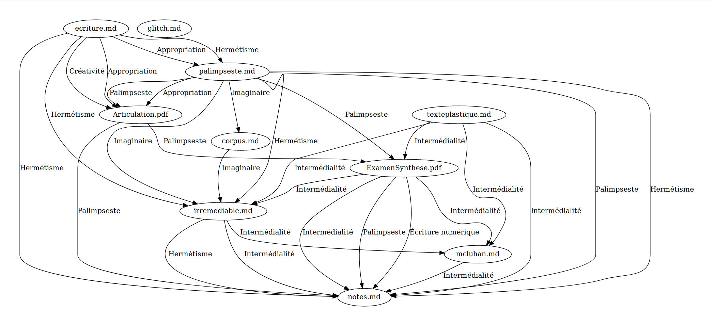
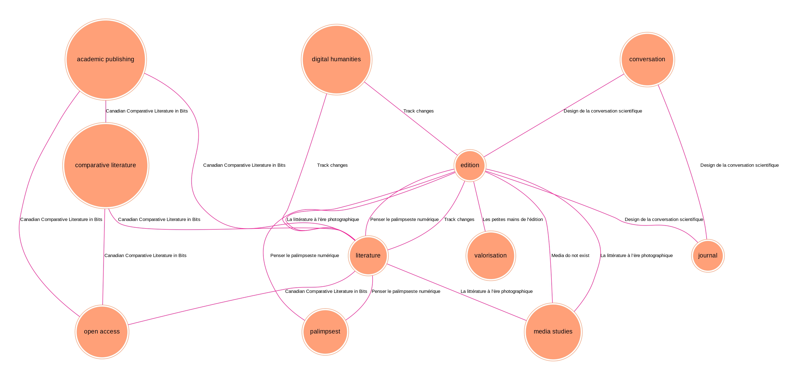
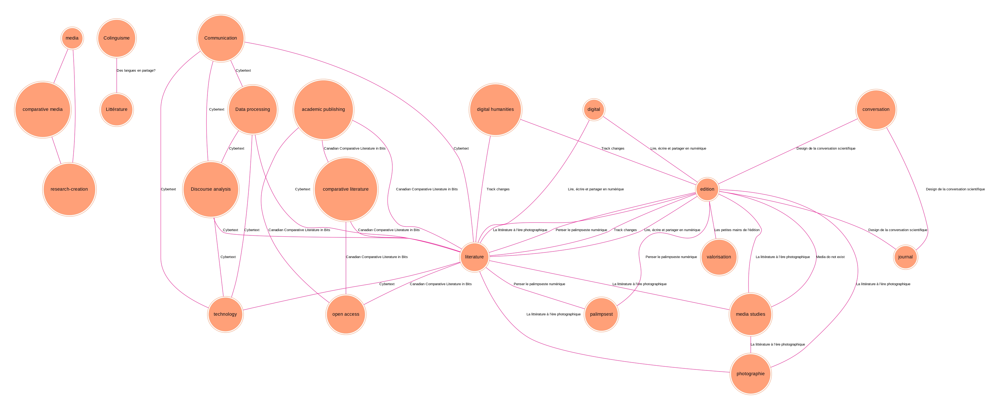

La Fabrique
La Fabrique témoigne d’une démarche en plusieurs dimensions : d’abord affirmer l’écriture comme relevant d’un processus réel et collectif ; ensuite inscrire mon écriture dans une approche éditoriale comme agencement du texte en dialogue ; enfin permettre une introspection en miroir de ce qui a générer l’écriture ici même. La fabrique renvoie à une infrastrusture organisée centrée sur le faire et donc évoque vis-à-vis de l’objet qu’elle subordonne une réalité, sinon artisanale, du moins très concrète et incarnée dans un contexte : dans cette perspective, l’écriture s’élabore à la suite d’une architecture complexe, elle est en travail et ne peut, selon notre hypothèse première, se distinguer d’un encadrement qui aura non seulement déterminé ses caractéristiques mais surtout permit son existence. Dans cette partie seront articulées et croisées plusieurs dynamiques de production de l’écriture : que cette dernière serve à l’établissement d’un concept intellectuel, qu’elle serve à une projet de recherche ou même à un témoignage auto-réflexif, l’écriture sera retracée dans un contexte non-abstrait d’émergence.
La fabrique de la fabrique #
La fabrique en tant que concept possède déjà une vie de déclinaisons et a connu diverses unions plus ou moins motivées par une rhétorique du discours (La fabrique du livre, La fabrique de la littérature, La fabrique de la science, La fabrique des algorithmes, La fabrique des humanités, La fabrique des femmes, La fabrique de la liste, La fabrique de la liste, La fabrique de la répétition etc.). Il est donc peu probable que l’alliage que nous proposons ici ne soit pas sans précédent1 mais, plutôt que de viser une originalité – toujours relative à un contexte d’écriture et ambitieuse d’une supériorité –, il aura l’avantage d’engager le questionnement de fond d’un modèle théorique qui aménage et décompose nos définitions et disciplines (humanités, pensée, écriture) par le spectre de la pratique. En effet, si les déclinaisons de la fabrique se distinguent par leur horizon d’étude (d’un objet à une communauté), il demeure une constante entre ses unions : celle de comprendre le fonctionnement ou l’économie interne d’un principe à l’opposé d’une intellectuelle abstraction. La fabrique est cet agent qui permet de révéler le faire d’un objet. Ce qui engendre deux manoeuvres principales : 1. remettre en perspective l’objet par rapport à des biais de pensée en montrant notamment que son sens ou sa prétendue universalité sont des constructions plus complexes2 ; 2. inscrire l’objet dans une pratique ou un ensemble de pratiques. Avant d’employer ce terme sous de multiples coutures, et de le prendre pour acquis dans cette perspective de l’écriture, il devra d’abord être étudié sous ses propres architectures. Retournement de la fabrique sur elle-même, la réflexion souhaite ici comprendre sur quel terrain idéologique s’est bâti cet édifice, quelles ont été les perspectives et tensions qui ont mené à greffer un terme, qui pourtant semble opposé aux institutions intellectuelles, aux lieux de savoir. Comment se fait-il que ce qui désigne un établissement industriel de transformation des matières premières soit devenu une analogie à la page des humanités ?
Pour comprendre ce ce qu’il coûte à l’écriture d’être fabrique, il faut d’abord comprendre ce qui se noue dans la fabrique qui, loin d’être exempte de ce qu’elle revendique, l’incarne dans les études : la fabrique de fabrique est le premier seuil d’une partie qui souhaite appréhender l’écriture dans toute son épaisseur structurelle. Paradoxe scientifique qui semble généralisé, et sur lequel Antoine Fauchié et moi avons notamment discuté dans le cadre d’un échange épistolaire, la fabrique est partout sans être jamais réellement définie en tant que telle, à la différence du média. Dans ses nombreux emplois, il s’agit moins de la définir que de promouvoir son adoption dans les disciplines en sciences humaines et sociales. Évidente par trop mais éternellement vague, la fabrique est peut bien être suspecte sous les aspects de son automatisme et de sa propre dissimulation en tant que concept3.
L’homo faber sapiens #
L’appréhension de la fabrique en tant que concept, au-delà de son utilisation dans diverses disciplines, dont les études littéraires, semble émerger comme une quête de l’humain, de ce qui en fait la spécificité et ce qui permet de le distinguer des autres formes d’être, au travers de la connaissance et du savoir-faire. Fermentation entre des démarches philosophiques (liée au design ( Citation: Flusser, 1999 Flusser, V. (1999). The shape of things: a philosophy of design. Reaktion. ; Citation: Flusser & Maillard, 2002 Flusser, V. & Maillard, C. (2002). Petite philosophie du design. Circé. ) ou à la théorie des arts ( Citation: Raunig, Derieg & al., 2013 Raunig, G., Derieg, A. & Negri, A. (2013). Factories of knowledge, industries of creativity. Semiotext(e) ; distributed by the MIT Press. ) et des substrats anthropologiques ( Citation: Ingold, Gosselin & al., 2017 Ingold, T., Gosselin, H. & Afeissa, H. (2017). Faire: anthropologie, archéologie, art et architecture. Éditions Dehors. ) , la fabrique est le prolongement d’un héritage humaniste où s’articulent enquêtes, théories, pratiques et performances. Déjà dans les formes les plus élémentaires de son architecture, la fabrique brasse, dans une même idée d’importance, terrains physiques et culturels, arts du dire et du corps, et modèles sociétaux ou épistémologiques pour comprendre l’humain dans son rapport au monde. Représentant certainement l’un des premiers philosophes modernes à adresser la question de la fabrique, Flusser a travaillé à définir le concept de fabrique, directement et brièvement dans le cadre d’un chapitre ou indirectement et densément dans sa réflexion transversale sur le geste dans les arts. Dans Vom Stand der Dinge. Eine kleine Philosophie des Design ( Citation: 1997 Flusser, V. & Wurm, F. (1997). Vom Stand der Dinge: eine kleine Philosophie des Designs. Steidl Verl. ) , Flusser, se saisissant du totem de l’homo faber, fait de la fabrique un moyen de reconnaissance des individus entre eux4. L’immunité humaniste brandie en pleine main fait de la fabrique, et du faire qu’elle recouvre, un rapport au monde non seulement créatif ou productif mais agissant, soit, capable de déclencher des changements ou d’interrompre des phénomènes en cours ( Citation: Lorusso, 2022 Lorusso, S. (2022). Liquider l’utilisateur. Tèque, 1(1). 10–57. https://doi.org/10.3917/tequ.001.0010 ) . Le faire de l’homme est une capacité d’intervention sur le monde et ses composants qui lui permet, par extension, de penser, prévoir, sélectionner ses différentes compositions. La transformation de matières premières, vision de la fabrique qui enracine son utilisation dans une langue commune, n’est donc pas loin de la réflexion de Flusser qui reprend la force de la métamorphose. Pour densifier le terme et lui donner une épaisseur historique quasi-génésiaque, Flusser mentionne les différentes périodes de la fabrique humaine distinguées par le moyen d’intervention attitré (main, outil, machine, appareils) :
Fabrizieren heisst etwas aus dem Gegebenen entwenden, es in Gemachtes umwenden, anwenden und verwenden. Diese Bewegungen des Wendens werden zuerst von Händen ausgeführt, dann von Werkzeugen, Maschinen und schlichlieh Apparaten. […] Demnach sind Fabriken Orte, wo Gegebenes in Gemachtes umgewendet wird […]. ( Citation: Flusser & Wurm, 1997, p. 69 Flusser, V. & Wurm, F. (1997). Vom Stand der Dinge: eine kleine Philosophie des Designs. Steidl Verl. )
Manufacturing means turning what is available in the environment to one’s own advantage, turning it into something manufactured, turning it over to use and thus turning it to account. These turning movements are carried out initially by hands, then by tools, machines and, finally, robots. […] Accordingly, factories are places where what is available in the environment is turned into manufactures […] ( Citation: Flusser, 1999, p. 44 Flusser, V. (1999). The shape of things: a philosophy of design. Reaktion. )
Fabriquer, cela signifie d’abord manipuler et détourner quelque chose qui fait partie du donné, le changer en artefact et le tourner vers l’application pratique. Ces gestes qui manipulent et détournent, il sont exécutés d’abord par les mains, puis par des outils, des machines et finalement par des machineries complexes. […] En conséquence, la fabrique est le lieu où ce qui était donné est manipulé, transformé en artefact […] ( Citation: Flusser & Maillard, 2002, p. 58 Flusser, V. & Maillard, C. (2002). Petite philosophie du design. Circé. )
Fabriquer signifie détourner quelque chose du donné, le transformer en quelque chose de fait/artefact, y avoir recours et en faire usage. Ces gestes qui tournent et retournent sont d’abord exécutés par des mains, puis par des outils, des machines et finalement des appareils/appareillages. […] Ainsi, les fabriques sont les lieux où l’on transforme le donné en artefact […] (traduction personnelle)5
Si l’image de la fabrique moderne est née de la première révolution industrielle et repose principalement sur un machinisme qui succède à la manufacture, Flusser en fait une clef atemporelle où le remplacement des outils n’altère pas la trame de fond (le premier outil, la main, sera d’ailleurs considéré comme le plus « génétique » de tous). Dans la généalogie des outils à laquelle procède Flusser, les machines, qui ne seront pas plus décrites ou exemplifiées et qui appartiennent à la même classe que d’autres types d’appareillages divers, ne constituent pas le dernier stade d’une évolution laissée ouverte par le chercheur : les machines que mentionnent Flusser se rapportent à la génération des machines mécaniques (dont l’approche s’inscrit dans le prolongement de la pensée de Marx), à la différences des « appareils » qui suivent dont le flou lexical justement ouvre sur les générations des dispositifs à venir. Continuité entre les époques et les révolutions des supports, le geste, soit le principe du faire en action, est ce qui permet d’obtenir une vision d’ensemble d’un art ou d’un artisanat. Ce faire est décliné dans la version allemande en une multitude de manipulations enracinées dans le « wenden », le fait de tourner : ent/um/an/ver-wenden. Si la version anglaise a la possibilité de décliner les prépositions autour de turning (into, over, to), la langue française se voit limitée autour des seules options « détourner », « retourner ». Si l’on prend une autre racine, qui est la racine latine -verto, le lexique s’ouvre sans autant permettre de dépasser le fossé que créé le passage d’un système linguistique à un autre : ent-wenden ou « tourner hors » renvoit au sens étymologique de « divertir », umwenden ou « tourner vers » devient « convertir », anwenden ou « tourner dans » et le plus neutre verwenden ou « tourner pour » deviennent des transversions. Si les langues ne peuvent complètement calquer à la structure de l’allemand d’origine, il reste que la déclinaison intraduisible des tours retranscrit une pensée du geste, d’un maniement proche d’une mécanique qui peut revertir revêtir une série de saveurs et de mise en mouvement.
Engagée justement pour la reconnaissance de l’artisanat au regard de l’art ou des activités peu valorisées dans les études archéologiques, la réflexion de Flusser distingue peut-être un peu trop artificiellement les fabriques artisanales (comme la poterie) des arts d’expression (comme la littérature) pour exprimer un désir de réunion (réunion d’autant plus déroutante si elle concerne deux extrêmes). Son propos n’est pas de refuser la dimension concrète et même artisanale aux arts mais de rompre avec une certaine tradition de la quête humaniste (autant celle de la Réforme que celle de la Renaissance) et même d’inverser une tendance des études dans leurs observations. Redéfinir l’humain, et sa « dignité », par le faire figure l’occasion pour le philosophe de remettre en question une tradition humaniste, et plus particulièrement ses a-prioris techniques et matériels. Attachée aux œuvres d’arts, aux textes politiques, philosophiques ou théologiques, la tradition humaniste visée par Flusser ne s’est au fond, et c’est là le cœur de son argument, intéressée qu’à une facette du kaléidoscope de la production humaine en laissant de côté l’ouvrier et l’artisan. Le regard humaniste ne considère qu’un fragment de la fabrication (régi par des principes de scientificité, de beauté et de vérité) oubliant une dimension de labeur. Les conclusions humanistes ne concernent alors et ne comprennent (au sens de prendre avec soi) qu’un groupe isolé et sélectif de travailleurs (avec une hiérarchie allant du génie au copiste) et qu’un public restreint et élite. En réaction à cette sélection scientifique, Flusser rappelle le faire au centre d’un rapport au monde de l’humain en tout temps, et il le fait au moment où justement les nouveaux médias émergent à l’horizon. Dans le concept de fabrique est esquissé le pressentiment de l’auteur du changement de paradigme culturel global qui va être amené par les technologies numériques : rappeler aux têtes le faire, c’est prévoir une déprise des mains sur les processus de production de la pensée scientifique.
Dasselbe anders gesagt: Fabriken sind Orte, an denen immer neue Menschellformen hergestellt werden: zuerst der Handmensch, dann der Werkzeugmensch, dann der Maschinenmensch und schließlich der Apparatmensch. Wie gesagt: Das ist die Geschichte der Menschheit. ( Citation: 1997, pp. 69-70 Flusser, V. & Wurm, F. (1997). Vom Stand der Dinge: eine kleine Philosophie des Designs. Steidl Verl. )
To make the same point a bit differently: Factories are places in which new kinds of human beings are always being produced: first the hand-man, then the tool-man, then the machine-man, and finally the robot-man. To repeat: This is the story of humankind. ( Citation: Flusser, 1999, pp. 44-45 Flusser, V. (1999). The shape of things: a philosophy of design. Reaktion. )
On peut dire la même chose en d’autres termes : les fabriques sont de lieux où sont sans cesse produites de nouvelles variétés d’hommes : d’abord l’homme-main, puis l’homme-outil, puis l’homme-machine et enfin l’homme-appareil. On l’a déjà dit : l’histoire de l’humanité, c’est cela. ( Citation: Flusser & Maillard, 2002, pp. 58-59 Flusser, V. & Maillard, C. (2002). Petite philosophie du design. Circé. )
Autrement dit, les fabriques sont des lieux où sont sans cesse forgées de nouvelles formes humaines : d’abord l’homme-main, puis l’homme-outil, puis l’homme-machine et enfin l’homme-appareil. Comme je l’ai dit, c’est l’histoire de l’humanité. (traduction personnelle)
Pour lutter contre une posture intellectuelle partiale et dépareillée, agir et intervenir sur ses propres factures, la fabrique de Flusser souhaite ouvrir le champs des objets d’études à d’autres niveaux de production, d’autres principes d’évaluation et ultimement à d’autres classes sociales : ouvrir les (en)quêtes scientifiques aux usines (terme utilisé par Flusser) ou, pour proposer une image qui marque l’antagonisme développé par le chercheur, les sortir des musées. La fabrique du futur de Flusser, en problématisant l’opposition entre école noble et vile fabrique, argumente en faveur d’une liaison entre l’homo faber et l’homo sapiens sapiens, appelant ainsi à une nouvelle perspective humaniste et donc à une nouvelle humanité. La fabrique de Flusser est purement théorique, surtout au regard de l’approche marxienne de la fabrique, c’est-à-dire qu’elle établit une pensée transversale du geste dans l’histoire de l’humain : il ne s’agit ni du lieu ni des outils de fabrication autrement que dans ce que leurs essences conceptuelles peuvent dire sur le devenir de l’humain au travers de la technique.
L’appropriation érudite #
Inclusivité entre les modes de production du savoir et ouverture de la science formelle, la fabrique est ainsi le stylet qui permet à Flusser de redessiner les contours d’un nouvel humanisme, ou plutôt de sur-écrire les manques d’un humanisme déjà établi à même un espace de recherche. Par extension, c’est également les portraits du chercheur et de l’auteur6 humanistes qui sont confrontés au changement par l’évolution de la fabrique. Si le texte d’origine utilise le terme épicène « Mensch » ((être humain, personne), décliné de multiples façons avec « Handmensch […] Werzeugmensch [… ] Maschinenmensch […] Apparatmensch » ( Citation: 1997, p. 70 Flusser, V. & Wurm, F. (1997). Vom Stand der Dinge: eine kleine Philosophie des Designs. Steidl Verl. ) , le modèle masculin est largement représenté dans les traductions du texte qui ont été établies en anglais et en français.
Fabrication langagière d’une masculinité d’un concept qui semblait à l’origine plus proche des enjeux d’inclusivité (mais qui peuvent également être dus à la seule nature de la langue allemande), la traduction anglaise, qui utilise le terme « human » à plusieurs reprises pour aborder la signification symbolique et ontologique de la fabrique, introduit dans le passage de l’homo à l’homo faber par la prise en main de l’outil, la figure du « primitive man » (traduit de « Urmensch »). L’homme primitif redéfinit sa propre humanité en passant du « hand-man », au « tool-man », au « machine-man » jusqu’au « robot-man » ( Citation: Flusser, 1999, p. 44 Flusser, V. (1999). The shape of things: a philosophy of design. Reaktion. ) . Cette résurgence de homo faber comme père fondateur d’une génération d’hommes capable d’intervenir sur leur environnement et de changer leurs destinés biologiques, a des physionomies de syndrome de l’illumination7 en plus de ne concerner qu’une figure de l’artisan, essentiellement bricoleur. Comme Dieu, l’homme fait le monde en ce qu’il fabrique ses évolutions par le travail de matières premières et données. La traduction de 2002 du même chapitre semble justement transcrire une lecture masculine, traduisant « human » par « homme », et s’écartant peut-être encore davantage d’une dimension inclusive originellement floue de la pensée de Flusser. La fabrique en tant qu’outil méthologique d’une nouvelle archéologie est également un roman littéraire, permettant de reprendre l’histoire d’une humanité, « the story of humankind » ( Citation: Flusser, 1999, p. 45 Flusser, V. (1999). The shape of things: a philosophy of design. Reaktion. ) dans ses premiers bouleversements, de comprendre l’avènement d’un homme moderne, d’un savant qui sait parce qu’il fait au préalable et donc de saisir ce que signifie être un homme vis-à-vis du savoir. Minoritaires dans l’ensemble de l’ouvrage lorsqu’utilisées seules, les références au féminin sont des disgressions graphiques de l’auteur où l’individu est principalement le produit de l’imagination masculine, donc des symptômes d’une fabrique plutôt que de réels acteurs sur cette dernière8. Parce que les traductions de la pensée de Flusser semblent aggraver encore davantage l’implicite inclusivité d’un modèle, la définition de la fabrique souffre d’une première incomplétude dans sa mission humaniste, ne traitant en outre pas véritablement de la question des classes ouvrières et travailleuses, ne mentionnant pas réellement les mains qui participent pourtant à l’établissement et l’enregistement des savoirs.
La démarche de la fabrique, dans toute sa saveur et son potentiel démocratique, s’établit par glissements de terrain récursifs : elle déconstruit en aspirant à une universalité qui comporte cependant ses propres paradoxes et frontières. Construction conceptuelle, la fabrique demeure, en deçà de son aspiration à revaloriser une réalité concrète du savoir et de l’humain, une fabrication d’hommes universitaires – principalement si ce n’est exclusivement – blancs. Comme pour le design, l’importance de la fabrique tient autant du pouvoir que de l’utopie et le faire épique de l’humain peut relever sous certains aspects d’une romancisation. La rhétorique universelle du discours de Flusser souffre possiblement de la résurgence symbolique du complexe du sauveur en ce qu’elle déploie l’idée d’une fabrique du futur en dehors de l’usine qu’elle souhaite intégrer dans la défense. L’ordre du discours de la fabrique s’établit en dehors de celle-ci. En tant qu’outil théorique extrait d’une réalité structurelle, il est peu probable que la fabrique s’adresse à un autre public que celui installé dans des bureaux munis d’écrans et murés de livres, que celui arpentant les couloirs de la tour d’ivoire du savoir. Parce qu’elle s’intéresse davantage aux gestes et à leurs inscriptions historiques, la fabrique n’est pas tant un mot du peuple, de l’ouvrier aux travailleur du clic
(
Citation: Casilli, 2021
Casilli,
A.
(2021).
Il n’y a pas d’intelligence artificielle, il n’y a que le travail du clic de quelqu’un d’autre. 33. Retrieved from
https://hal.science/hal-03560718
)
, qu’un fantasme démocratique laissant malgré tout intacte la séparation pourtant combattue dans le discours entre le monde des têtes pensantes et celui des mains agissantes. La volonté d’une réunion utopique démarque deux catégories particulièrement essentialisées : l’homo faber et l’homo sapiens sapiens. La fabrique est donc une idée autant qu’un idéal qui se destine probablement moins à réunir deux catégories selon le même ordre de pouvoir que d’affimer encore davantage la sapience de l’homo sapiens sapiens sur l’homo faber. Cet homo sapiens sapiens, composition quasi mathématique entre un savoir et un faire, résurgence éclatante des premiers âges, est en effet capable de comprendre la réalité qui n’est plus directement la sienne et a les outils théoriques nécessaires pour l’intégrer dans sa pensée du futur. En ce sens, la fabrique souffre dès sa naissance universitaire de deux
névroses : 1. une appropriation et une récupération d’une classe sociale sur une autre, sans radicalement changer la condition politique de la classe sociale dénigrée ; 2. une invention par les mots d’une usine imaginaire, celle perçue par ceux qui n’y sont pas. Ces points sont d’autant plus nets qu’ils se voilent d’une certaine naïveté ou d’une ignorance vis-à-vis des racines du concept en tant que tel. Au-delà des lectures universitaires et des résurgences du mythe de l’homo faber, la fabrique est d’abord un principe de combat et de résistance de travailleurs n’engageant pas directement les lieux de savoir mais laissant penser à une autonomie vis-à-vis de l’institution.
L’origine politique #
La fabrique à l’origine s’incarne moins dans la délimitation d’un lieu qui recèlerait des pièces oubliées des intellectuels, que comme une architecture, implosée ou non, qui évolue au grès du mouvement de ce qui l’anime. Clef se destinant dans la théorie à abattre la cloison entre deux modes de production de la connaissance, la fabrique n’est pas seulement l’intellectualisation d’un savoir-faire propre à l’humain – motivée autant par un combat intellectuel que par la beauté d’une image paradoxale –, elle revêt une ambivalence politique beaucoup plus insidieuse que Raunig, dans son étude Factories of knowledge ( Citation: Raunig, Derieg & al., 2013 Raunig, G., Derieg, A. & Negri, A. (2013). Factories of knowledge, industries of creativity. Semiotext(e) ; distributed by the MIT Press. ) , adresse ainsi :
Factories of knowledge: fashionable metaphor for the self-proletarization of intellectuals, misinterpretation of ephemeral Marx marginalia, terminological makeshift solution for the situation of precarious knowledge work? There is no doubt that the General Intellect has been incrasingly seized by capitalist valorization in recent decades. Knowledge economy, knowledge age, knowledge-based economy, knowledge management, cognitive capitalism–these terms for the current social situation speak volumes. Knowledge becomes a commodity, which is manufactured, fabricated and traded like material commodities. Immaterial flows of know-how and finances, cooperation and coordination, collective forms of the intellect seem to combine in some regions of the world into a tendency to transform modes of production. This tendency could be called cognification, and this is not necessarily coupled with an improvement of working conditions or a substantialixation of cognitive labor. ( Citation: Raunig, Derieg & al., 2013, pp. 17-18 Raunig, G., Derieg, A. & Negri, A. (2013). Factories of knowledge, industries of creativity. Semiotext(e) ; distributed by the MIT Press. )
Les fabriques du savoir : métaphore à la mode de l’autoprolétarisation des intellectuels, interprétation erronée des marginalia éphémères de Marx, solution terminologique de fortune à la situation de précarité du travail de la connaissance ? Il ne fait aucun doute que l’intellect général a été de plus en plus accaparé par la valorisation capitaliste au cours des dernières décennies. Économie de la connaissance, ère de la connaissance, économie basée sur la connaissance, gestion de la connaissance, capitalisme cognitif – ces termes pour désigner la situation sociale actuelle sont très éloquents. La connaissance devient une marchandise, qui est fabriquée, manufacturée et échangée comme les marchandises matérielles. Les flux immatériels de savoir-faire et de finances, la coopération et la coordination, les formes collectives de l’intellect semblent se rejoindre dans certaines régions du monde en une tendance à transformer les modes de production. Cette tendance pourrait être appelée cognification, et elle n’est pas nécessairement associée à une amélioration des conditions de travail ou à une fixation substantielle du travail cognitif. (traduction personnelle)
À l’origine désignant le champ large du faire (du métier à l’action, du produit à l’atelier d’artisan, issu du latin classique fabrica) et ayant eu des emprunts plus spécifiques (la construction des bâtiments de l’église dans le latin médiéval, le travail du forgeron au XIV^e^ siècle, etc.), la fabrique désigne l’ensemble lexical issu du lieu de construction qui se fixe dans un sens plus moderne à partir de la première révolution industrielle. L’ambiguïté de la fabrique que soulève Raunig vient selon ses recherches d’une décontextualisation politique de son sens : ce que l’on connaît aujourd’hui comme la théorie de la fabbrica diffusa. Établie à partir de l’exode des travailleurs italiens dans les années 1970, cette pensée de l’espace de production est intrinsèquement liée au mouvement Autonomia Operaia ou en référence au concept d’« autonomie prolétarienne », postulat d’une émancipation du prolétariat par le développement d’une autonomie par rapport au capital9. L’interprétation de Raunig de ce moment de la culture ouvrière fait de la fabrique un lieu au départ physiquement incarné, délimité géographiquement, qui se retrouve éclaté lorsque les travailleurs/travailleuses qui l’habitent se dispersent hors de ses sites de production. Raunig décrit le phénomène, qui sera plus tard thématisé comme « the ambivalent process that followed the exodus of the workers from the factory: a movement of dispersion, diversification, diffusion of sites of production and production assemblages », comme ce qui a mené la fabrique à « itself leaks out and over its boundaries » ( Citation: Raunig, Derieg & al., 2013, p. 20 Raunig, G., Derieg, A. & Negri, A. (2013). Factories of knowledge, industries of creativity. Semiotext(e) ; distributed by the MIT Press. ) . L’architecture de ce lieu du faire a donc d’abord été extraite d’une inscription géographique, globalisée comme phénomène social avant d’être récupérée par la théorie comme fer de lance d’une nouvelle épistémologie.
Partant du principe que ce mouvement de diffusion de la fabrique a eu un impact réel et culturel sur les changements géographiques, les notions de territoires ( Citation: Mucelli & Gulinello, 2023 Mucelli, E. & Gulinello, F. (2023). La fabbrica diffusa: produzione e architettura a Cesena. Quodlibet. ) , la définition de la fabrique par l’académique, renversement du mouvement, a elle-aussi un impact sur les spacialisations des connaissances. C’est dans cette restitution d’un enracinement important que ce pose alors la question pour Raunig : « Yet what does it mean, when even at the transition to post-fordist modes of production the metaphor of the factory still continues to be applied to the university? » ( Citation: Raunig, Derieg & al., 2013, p. page Raunig, G., Derieg, A. & Negri, A. (2013). Factories of knowledge, industries of creativity. Semiotext(e) ; distributed by the MIT Press. ) ou que transfèrons-nous sur l’écriture et la production du savoir en conservant la métaphore structurelle de la fabrique, et en l’érigeant au rang de concept, et en l’adoptant pour comprendre les idées et catégories de nos sciences humaines et sociales ?
Alertant sur les dérives d’un concept à la mode dans les propositions de refonte de modèles de connaissance, Raunig ne renie pour autant pas le principe – puisqu’il demeure au coeur de son étude majoritairement sous la forme pluriel « factories » – mais souhaite en saisir toute l’épaisseur ambiguë en discutant notamment ce que la fabrique a à faire avec les lieux de savoir (dont l’université qui est un cas sur lequel se concentre plus particulièrement l’auteur). Qu’apporte la fabrique à la tour du savoir et en quoi la détermine-t-elle, inversant ainsi son statut d’objet à l’étude ?
Apposée à la production de connaissances scientifiques, la fabrique entérine une logique productiviste de la science, encourageant ainsi moins la libération démocratique des échanges qu’elle ne serre encore davantage un écrou capitaliste sur des conventions sociales de travail. Penser le savoir comme une fabrication, ce n’est pas seulement ramener le principe du faire dans l’université, c’est également charrier la notion de produit, de standard, de travail à la chaîne. La fabrique usine. Le reconditionnement de la fabrique dans la pensée de Raunig est à faire selon ses racines politiques pour la réinscrire dans un activisme du territoire. C’est donc moins les modèles d’étude, les habitus scienfitiques et les collections des musées qu’il faut révolutionner que la représentation et la possession des lieux du savoir qu’il faut reconfigurer. La résistance à ce qu’il appelle un capitalisme cognitif fait de la fabrique plus que d’obéissance à une productivité, un principe d’autant plus réformateur pour les lieux de pensée. En se désintéressant de la « question of knowledge production » ( Citation: Raunig, Derieg & al., 2013, p. 24 Raunig, G., Derieg, A. & Negri, A. (2013). Factories of knowledge, industries of creativity. Semiotext(e) ; distributed by the MIT Press. ) , qui réactualise un modèle ancien de l’institution avec la peinture d’un nouveau régime de domination de l’information, la fabrique du savoir de Raunig vise la refonte d’une espace en remettant en question les structures, les frontières et donc les représentations que nous en avons autant de l’intérieur que de l’extérieur. Quittant la logique de la perspective, pour défendre un interventionnisme réflexif, la fabrique de Raunig repositionne le faire non plus au centre d’un discours mais au centre de la production de ce discours.
Conscient du jeu capitaliste qui semble mettre aux commandes de leurs propres sur-consommations les utilisateurs, Raunig défend les lieux de savoir de demain comme les terrains complexes où la pluralité, l’interdisciplinarité et une certaine indiscipline des formes de travail cognitif se chevauchent. Dans ce souhait, qui comporte également sa part utopique et romantique, la fabrique est une philosophie qui vise justement à repenser comment, c’est-à-dire sur quels modes politiques de production, émerge, s’incarne et habite le territoire, la pensée. Cette philosophie implique, bien plus que le révolution démocratique des savoirs flusserienne, une résistance qui confère à une indiscipline des disciplines scientifiques et plus généralement de l’écriture. Si l’université est une fabrique de productions textuelles, alors phagocitée par un objet d’étude qu’elle a elle-même emprunté, ce n’est pas au sens d’usine de production de connaissance mais au sens de lieu de désobéissance créative. Le programme de reterritorialisation de Raunig porte la pensée de la fabrique vers des principes de modularité qui nécessitent de questionner impérativement les dimensions politiques de la transformation des matières premières qui sont les notres, donc autant les cadres d’émergence de nos idées que les modes d’enregistrement de nos écritures. Ce désir d’inclusion des pratiques du faires dans la connaissances signifie donc moins une ouverture à un lieu qui avait été exclu des humanistes qu’un mouvement d’introspection des humanistes sur leurs propres fabrication. La fabrique sert alors de miroir pour comprendre que le faire est déjà dans les ordres du discours et qu’il les politise.
La Machine humaine #
A “factory” is generally understood to be an assemblage of machines and workers, through which all aspects of production are striated, mechanized and standardized on the basis of the division of labor. An assemblage of machines and workers – that means what is at stake here is the relationship between these two components, their exchange and concatenation. ( Citation: Raunig, Derieg & al., 2013, p. page Raunig, G., Derieg, A. & Negri, A. (2013). Factories of knowledge, industries of creativity. Semiotext(e) ; distributed by the MIT Press. )
Par « fabrique », on désigne en général l’assemblage de machines et d’ouvriers qui assure l’organisation, la mécanisation et la standardisation de tous les aspects de la production, sur la base de la division du travail. Un assemblage de machines et d’ouvriers, autrement dit, ce qui est en jeu ici, c’est la relation de ces deux composantes, leur échange et leur concaténation. (traduction personnelle)
Le questionnement de Raunig sur les coulisses politiques d’un concept implique, parce qu’il réfère à des dynamiques d’industrialisation, de comprendre ce qui compose la fabrique concrètement, ce qui l’habite de l’intérieur et lui procure un principe de fonctionnement au-delà du terme général du faire et d’une belle philosophie transversale du geste. La fabrique est le lieu d’organisation de machines dont l’humain participe qui assure l’organisation, la mécanisation, la standardisation des aspects de la production sur la base de la division du travail. Différente du hangar ou de l’entrepôt où les machines sont stockées et accumulées, la fabrique organise l’espace et les échanges entre les dispositifs selon un éternel – et peut-être irréductible – impératif de production. C’est cette ligne directrice de la production, finalité de la transformation de matières données, qui, si elle est apposée sur les lieux de savoirs, aura tendance à faire de l’écriture l’extension d’un logique capitaliste. Au-delà de cet horizon, la fabrique est une organisation de l’espace bien particulière que Deleuze dans la première section de « Post-scriptum sur les sociétés de contrôle », définit en présentant quatre de ses principales qualités : un lieu fermé (1) parvenant à concentrer dans l’espace (2), d’organiser dans le temps (3) et donc d’aggréger dans un lieu construit une force du production dont les résultats dépassent la somme des efforts ayant court (4). La structuration d’un ensemble spatial et temporel relève autant d’un choréographie ou d’une mise en scène que d’un dispositif autoritaire qui rassemble, organise, occupe par l’attribution des tâches, qu’il contient, détermine, oblige. L’être de la fabrique s’érige alors sur une ambivalence, présente autant dans ses appropriations érudites que ses racines politiques, entre humain et non-humain, entre résistance et conformité, transmission et exploitation.
The full ambivalence of the knowledge factory in the mode of modulation, its mechanisms of appropriation and its potential for resistance, also allows us to understand the sites of knowledge production no only as sites of the commodification of knowledge and the exploitation of the subjectivity of all the actors, but also and especially as sites of new forms of conflict. ( Citation: Raunig, Derieg & al., 2013, p. 51 Raunig, G., Derieg, A. & Negri, A. (2013). Factories of knowledge, industries of creativity. Semiotext(e) ; distributed by the MIT Press. )
La véritable ambivalence de la fabrique du savoir au regard de son mode de fonctionnement, de ses mécanismes d’appropriation et de son potentiel de résistance, nous permet également de considérer les espaces de production de la connaissance non seulement comme des lieux de marchandisation du savoir et d’exploitation de la subjectivité de tous les acteurs, mais aussi et surtout comme des lieux de nouvelles formes de conflits. (traduction personnelle)
L’économie de la fabrique, son équilibre entre plusieurs forces en mouvements, relations ou réactions, tient au rythme d’un métronome, orchestrant et scandant une lutte poreuse entre concentration et valorisation du travail ( Citation: Raunig, Derieg & al., 2013, p. 51 Raunig, G., Derieg, A. & Negri, A. (2013). Factories of knowledge, industries of creativity. Semiotext(e) ; distributed by the MIT Press. ) au sein d’un territoire (qu’il s’agisse de celui des travailleurs ou celui des chercheurs) qui se caractérise également par la présence essentielle du non-humain (outil ou machinerie). Si elle ne peut se départir complètement de son impératif productiviste, la pensée de la machine qui anime la fabrique se révèle davantage comme un modèle indépendant du moins autonome vis-à-vis des modes de production. De la manufacture qui était primitvement l’établissement du travail à la main, en passant par l’usine qui désigne l’établissement spécifique de la grande industrie, la fabrique moderne repose sur un principe machiniste. La machine permet de comprendre la fabrique autant comme un rassemblement d’apparata techniques que de corps humains et c’est justement cette ambivalence entre humain et non-humain – qui recouvre la distinction du travail et de l’être au travail soit comme valorisable soit comme exploitable – qui permet de caractériser la machine et ce, depuis la pensée de Marx. Dans son chapitre du Capital consacré à la fabrique, Marx évoque deux perspectives : 1. une première définissant la fabrique comme « collective laborer, or social body of labor » où le processus de production est alors une « combined co-operation of many orders of workpeople, adult and young, in tending with assiduous skill, a system of productive machines » ; 2. la deuxième où la fabrique se définit en son centre par une présence machinique : « the automaton itself is the subject, and the workmen are merely conscious organs, co-ordinate with the unconscious organs of the automaton, and together with them, subordinated to the central moving-power. » Si la première perspective place le travail humain et sa virtuosité au centre de la production en manoeuvrant la machine par ses aptitudes, la seconde semble prendre le contre-pied en plaçant le travailleur humain au service de la machine lui transférant ainsi comme par dialise ses aptitudes à faire : « the living labor of the workers is enclosed in the machine » ( Citation: Raunig, Derieg & al., 2013, p. 41 Raunig, G., Derieg, A. & Negri, A. (2013). Factories of knowledge, industries of creativity. Semiotext(e) ; distributed by the MIT Press. ) . C’est particulièrement cet aspect qui permet de catégoriser un usage capitaliste de la machine et le système de la fabrique moderne faisant des sujets de la production des objets de la machine et de la machine un sujet à part entière. À partir du moment où les machines deviennent des sujet, ce n’est pas seulement la recherche qui devient une marchandise mais également les modes de subjectivation des chercheurs. Inversement penser les lieux de savoir comme des fabriques, donc sur le rang d’usinage de connaissance, demeure une récupération d’un marqueur d’une classe sociale modeste par une classe intellectuelle qui, si on ne peut lui enlever le mérite de son travail et son sérieux, reste privilégiée10.
Cette perspective sur les modes de subjectivation se retrouve justement dans le « Post-scriptum sur les sociétés de contrôle » mais Deleuze y ajoute une complexité : les dynamiques de discipline/répression (incluant les possibilité de résistance) et de contrôle/auto-gouvernement qui sont sans cesse modulées. En somme, et c’est notamment ce qu’explique Raunig dans sa conservation du concept, la fabrique n’apporte pas seulement aux sciences humaines la puissance de sa métaphore ni la logique d’un appareil de répression digne de la machine M de Fritz Lang mais parce qu’elle fournit également les conditions de possibilité de la résistance à ses propres travers. En plus de l’assujettissement social et de l’asservissement machinique, la fabrique demeure un espace où dessiner de nouveaux modes de résistance en prenant en compte la modulation permanente des rapports tel que décrite par la pensée deleuzienne11.
Composée des faiblesses autant que des fantasmes d’une refonte révolutionnaire ou résistante des modèles de savoir, le premier prototype de la fabrique érigé jusqu’ici ne se soustrait pas à ses propres prises en main, elle hérite de ses propres fabrications. C’est avec cette première conscience de la fabrique fabriquée, qu’il faut composer pour, loin de résoudre ce leg universitaire, pouvoir cependant le reconnaître comme tel et cultiver l’humilité d’une écriture. Malgré ses bonnes et honnêtes intentions, mon écriture ne fait pas exception à une intellectualisation de phénomènes, applatis dans leurs réalités pour être contenus sans trop de débordements au sein d’un cadre universitaire. Elle-même fabriquée à partir de savoirs et de perceptions qui ne sont pas celles de l’usine ou du quotidien d’ouvriers, l’écriture ne pourra que projeter des discours sur des mondes qui ne pourront jamais prétendre à remplacer ou mieux dire les discours de ces mondes en eux-mêmes. Si la fabrique est reprise ici, c’est moins pour en refondre la naissance, qui ne peut être ni totalement reconfigurée ni totalement négligée, que pour la poursuivre dans le cadre particulier de l’écriture pour comprendre cette mâne de la littérature comme l’organisation d’un espace-temps où le faire ne témoigne pas tant de la supériorité d’une figure mythifiée que justement d’un flou dans les délimitations de notre humanité. Les fabriques de la pensée de Raunig vont justement dans le sens d’une possible récupération de ce nom du faire tout en résistant au capitalisme cognitif : la fabrique s’agence alors comme l’organisation d’une communauté de pratiques d’écriture qui réfléchit de l’intérieur à comment elle agence la transmission et diffusion de ses connaissances hors de ses sites de productions mais surtout qui questionne les agencements de ses propres relations par la perspective de la fabrique. Ce qui sauve peut-être la fabrique de sa naissance et qui permet de dépasser une dimension tantôt productiviste tantôt individualiste du faire, est certainement la dimension collective dans laquelle elle continue de se développer et de se redéfinir sans cesse.
Thinking through making #
La perspective du collectif est celle adoptée par Ingold dans sa pensée du faire où il affirme avec une certaine malice que les artistes sont désormais ceux qui mettent en pratique l’art de l’enquête, plus que les chercheurs et notamment les anthropologues ( Citation: Ingold, Gosselin & al., 2017, p. 32 Ingold, T., Gosselin, H. & Afeissa, H. (2017). Faire: anthropologie, archéologie, art et architecture. Éditions Dehors. ) . L’histoire des sciences a en réalité manqué une maille de sa propre constitution. Dans deux de ses ouvrages traduits en français, Faire et L’anthropologie comme éducation, Ingold développe justement autour de la question de la fabrication une approche interdisciplinaire de recherche et création interrogeant ainsi les frontières disciplinaires, liant un principe d’enquête (l’anthropologie) avec un processus de création (art, design et architecture)12. Ingold n’utilise pas directement, comme Flusser ou Raunig, le terme de fabrique ou de factory, il utilise davantage celui de faire (making) autour duquel il fonde un système de pensée et quelque fois celui de manufacture, et cela parce que son approche cherche moins à faire du principe de fabrication un outil en tant que tel qu’une perspective de communauté, qu’un mouvement. Le faire d’Ingold est un rapport qui évolue au gré des pratiques et qui ne peut pas être établi par aucune expertise préalable. Le faire ou la manufacture des idées (autre terme utilisé par Ingold) sont une chaîne d’articulation entre un art et une recherche, renouvelant ainsi l’image idéale du chercheur isolé dans son abstraction théorique :
[L]e théoricien pense et applique ensuite ses manières de penser à la substance matérielle du monde. Par contraste, le praticien cherche à laisser la connaissance croître à la faveur d’une observation et d’un engagement pratique auprès des êtres et des choses qui l’entourent. ( Citation: Ingold, Gosselin & al., 2017, p. 31 Ingold, T., Gosselin, H. & Afeissa, H. (2017). Faire: anthropologie, archéologie, art et architecture. Éditions Dehors. )
Le discours d’Ingold en tissant une certaine insolence vis-à-vis d’une tradition académique, parvient à éviter l’idéalisme intellectuel quelque peu élitiste de la première fabrique. Tentant une sortie dans les marges d’un modèle de pensée, son propos mène la main de la science plus loin que la perspective anthropologique ou historique à laquelle on peut habituellement le rattacher : la pratique est une donnée essentielle de la recherche et c’est d’abord par cette dernière que le savoir est déterminé. La pertinence de la théorie n’implique donc pas seulement une part de fabrication, comme une valeur ajoutée et une possible réponse à l’impératif de produire du contenu original, mais dépend d’une réelle démarche pratique car c’est là que se noue la véritable enquête. Dans cet horizon, il ne s’agit plus de making through thinking, ou de considérer la pensée comme une étape préliminaire au faire et les pratiques comme ce qui suit la théorie, mais de thinking through making. Le faire chez Ingold, qui concentre mais ne résume pas seulement la fabrique, suppose une conception spécifique de l’action. Cette approche n’est pas sans lien au développement de la machine et à son installation dans les ateliers de travail. Historien de l’art, Philippe Junod, dans un essai intitulé Transparence et opacité. Essai sur les fondements théoriques de l’art moderne, en s’appuyant sur les travaux du philosophe allemand Konrad Friedler, montre que le développement de la machine au XIX^e^ siècle a contribué paradoxalement à ce qu’il décrit comme « une revalorisation du travail manuel » {{junod p. 293}} notamment pour les artistes. Écrit à la fin des années 1960 et parut une première fois en 1975, la réflexion de Junod s’intéresse au changement de considération sur la praxis des artistes en parallèle de l’avènement de la machine au sein du processus de création. Si les pratiques concrètes, ce que l’on peut comprendre par le terme praxis, étaient jusqu’alors peu sujettes à des analyses et à un intérêt d’étude, elles deviennent des éléments légitimes pour la réflexion : l’expérimentation de nouvelles techniques permet justement de mettre en évidence l’écart entre une conscience technique et l’opacité des matériaux.
Ainsi en amont de l’art du faire, s’érige une pensée du faire qui s’enracine dans une conception de la matière : plus que l’imposition d’une forme sur un état qui serait précédemment informe donc sans détermination et sans signification, le rapport à la matière s’établit par un principe de correspondance. Inversant une conception propre à la philosophie occidentale où l’action de faire consiste à apposer ou imposer une forme prédéfinie dans une matière, Ingold envisage le faire dans un sens processuel, plus vivant car plus rendu imprévisible, où le corps de l’acteur est lui-même une composante de l’action et du rapport avec la matière13.
The wave is not an object, it’s not a thing. It’s the rythmic form of a movement. […] And if I’m swimming in the waves, my body is the same. It’s not an object, it’s not a thing. It is a movement, or perhaps a bundle of movements. […] and rythm is not a movement in itself but a relation between movements. […] So when I swimm, I’m setting up a set of relations between movements both of the water in a waves and of my body. […] But that mean that know-how is not a knowledge that is sunk cetimented into my body but is a movement in itself. ( Citation: Ingold, 2021 Ingold, T. (2021). Entre les lignes. Retrieved from https://lamanufacturedidees.org/2021/07/01/entre-les-lignes/ )
La vague n’est pas un objet, ce n’est pas une chose. C’est la forme rythmique d’un mouvement. […] Et si je nage dans les vagues, mon corps est le même. Ce n’est pas un objet, ce n’est pas une chose. C’est un mouvement, ou peut-être un ensemble de mouvements. […] Donc quand je nage, j’établis un ensemble de relations entre les mouvements à la fois de l’eau dans les vagues et de mon corps. […] Mais cela signifie que le savoir-faire n’est pas un savoir qui s’inscrit/s’enfonce dans mon corps mais un mouvement en soi. (traduction personnelle)
Le faire est un art de la composition des rapports, ce que la fabrique comme perspective permet d’interroger et d’introspecter mais en supposant de briser certaines grandes catégories. Nouvelle orientation du travail de recherche, la fabrique entraîne logiquement une introspection, la lecture d’un savoir depuis l’intérieur de sa constitution, mais suppose potentiellement de briser les grandes catégories, l’understanding défini comme « a solid ground that you are standing on » ( Citation: Ingold, 2021 Ingold, T. (2021). Entre les lignes. Retrieved from https://lamanufacturedidees.org/2021/07/01/entre-les-lignes/ ) , pour remettre en question les acquis en terme de transmission. C’est à l’issue de cette reconfiguration épistémologique qui concernent autant les données que les méthodes d’acquisition qu’un nouveau modèle émerge. L’undercommons, terme difficile à traduire en l’état, est à comprendre à l’opposé de l’understanding en tant qu’il est une renégociation collective et éternellement inachevée, c’est-à-dire en continuelle évolution, des savoirs. Ce qui se tient en dessous de nos communs, de nos patrimoines, paradigmes ou certitudes, est une forme de relation au monde émergeant de la fabrique d’Ingold qui se distingue fondamentalement de celle de Flusser dans la mesure où il ne s’agit plus de l’intervention d’un être, capable de penser le faire avec sa sapience, mais d’un rapport de l’être à la matière constamment en train de renégocier et d’être renégocier dans son humanité collective. La production de la fabrique dans cette ligne de fuite dépasse bien la somme des efforts ayant court puisqu’il s’agit moins pour le cas de la littérature de fournir des récits, d’impliquer des matières qui seront transfigurées (c’est-à-dire oubliées dans l’abstraction) que de participer à un soubassement de ce qu’est un processus d’écriture. Après la fabrique de la fabrique qui enquêtait sur les grands lignes ayant tissé l’institutionalisation d’un concept moderne, la focale sera déplacée vers le cas plus précis du littéraire.
La fabrique d’une littérature #
La pensée de la fabrique implique dans sa dimension collective une réelle éthique de l’écriture en tant qu’elle donne une ligne de conduite exploratoire, amenant à la revalorisation d’acteurs oubliés dans le cycle de la production au travers d’un principe de collectif, et entraînant notamment un bien-fondé de la publication des états préparatoires. Elle porte son œil du côté du travail « sur le texte lui-même » ( Citation: Sollers, 1970, pp. 106-107 Sollers, P. (1970). Entretiens de Francis Ponge. Gallimard. ) . Transposée aux les objets de la littérature, la pensée de la fabrique s’enrichie d’une dimension éditoriale de l’étude : la création du texte est alors abordée comme une collaboration entre l’auteur et l’éditeur que noue le travail sur les supports, matières, procédures qui ont conduit à distinguer des états de l’écriture.
L’idée de la manipulation ou du détournement de « quelque chose qui fait partie du donné » pour mener à la production d’un artefact, en plus d’évoquer avec vivacité la perspective de l’agir de Lorusso évoquée plus haut, correspond mot pour mot (ou presque) à la définition générale de l’édition notamment formulée par Fauchié (thèse à venir). L’édition du littéraire est une fabrique en tant qu’elle organise sous la forme d’une chaîne éditoriale des processus techniques (que l’on parle de culture imprimée ou numérique) pour construire un objet dont la catégorisation dépend principalement du format produit. Cette fabrique du littéraire, principalement appréhendé par le format et modèle du livre, peut également être abordée comme une industrie, passé d’un travail où la main est le moteur direct, puis indirect avec la presse mécanique de Gutenberg, pour être aujourd’hui effectué par des machineries ou appareillages plus complexes. Si cette première articulation permet bien entendu de nouer factuellement écriture et fabrique par le biais de l’instance d’édition, il ne faut cependant pas voir, dans cette peinture rapide et générale d’une activité, la fabrique seulement comme un temps délimité de l’écriture, celui de sa structuration et finalisation en vue de sa publication. La fabrique éditoriale est un cadre qui permet en effet de distinguer des étapes et processus, comme les ateliers de travail d’une usine, tout en émergeant elle-même des manipulations et détournements du donné, du faire, et ce, au-delà d’une temporalité de la chaîne éditoriale.
Ateliers d’écriture #
Lorsque l’on mentionne le terme « fabrique » dans le cadre des études littéraires, une des premières et des plus automatiques associations est celle du lieu où s’est mécanisé l’écriture dans son processus de publication. L’atelier d’imprimerie sera considéré autant comme le lieu d’une réalisation du littéraire que comme l’espace d’expérimentation des modèles littéraires. En référence à l’idée de « laboratoire de l’écriture » de Certeau qui comporte une fonction « stratégique », l’atelier d’imprimerie est le lieu d’un faire littérature où deux manipulations sont opérées : « une information reçue de la tradition ou de l’extérieur s’y trouve collectée, classée, imbriquée dans un système et par là transformée » et « les règles et les modèles élaborés dans ce lieu excepté permettent d’agir sur l’environnement et de le transformer » (Oups `certeau_arts_2010`) . Si pour Certeau, dans sa configuration moderne, l’écriture, comme la science ou l’industrie, ne relève plus d’une « vérité du vouloir faire » parce qu’elle obéit au même schéma de capitalisation et de productivisme, c’est parce que l’information règne principalement sur le signe :
Aujourd’hui, par une inversion qui indique le passage d’un seuil dans ce développement, le système scripturaire marche auto-mobilement ; il devient auto-mobile et technocratique ; il mue les sujets qui en avaient la maîtrise en exécutants de la machine à écrire qui les ordonne et les utilise. Société informaticienne. (Oups `certeau_arts_2010`)
On retrouve au fond ici la saveur marxiste d’une alerte à l’aliénation de l’humain, à la disparition de l’homo faber, par l’entremise de la machine, devenu l’outil intermédiaire d’un système scripturaire technocrate. Le passage d’un système à un autre, s’il n’est pas ciblé précisément par Certeau, correspondrait à une première industrialisation de l’écriture et surtout du geste d’inscription qui coïncide autant avec une réorganisation de l’espace de travail du signe qu’à une démocratisation de la diffusion des discours : des scripttoria, ateliers où étaient travaillés les manuscrits, jusqu’aux presses héritées du modèle de Gutenberg.
Lieux par définition d’écritures, les scriptoria s’établissent comme les annexes des bibliothèques des grands monastères et consistaient en une relativement large pièce prévue pour la fabrication collective d’ouvrages (depuis la préparation du support, la transcription, l’enluminure jusqu’à la reliure) sous la supervision d’un maître d’atelier (soit le bibliothécaire armarius, le sacristain ou le chantre). Pour les monastères plus modestes ne disposant pas de scriptorium, l’activité de copiste était exercée dans la solitude de la cellule du moine. La dimension collective du travail de composition, si la mécanisation y ajoute une composante intermédiaire non-humaine, demeure dans le développement de la presse qui débute à la suite de la sortie des ateliers de copies hors du territoire du religieux pour rejoindre le monde urbain et laïque3.
La culture de l’imprimé, qui aujourd’hui n’existe pas hors d’un lien avec la culture numérique (Oups `birkets_gutenberg_2006`) , marque le passage d’un processus artisanal et manuel à un processus déjà industriel. Ce passage n’est pas juste un bouleversement pour un rapport du faire puisque l’histoire de l’édition peut largement être abordée comme une progressive démocratisation du savoir (hors des scriptoria, la littérature sort de l’espace religieux pour devenir un élément du public).
Si la naissance de l’imprimerie ne signe pas automatiquement l’arrête de la production manuscrite (notamment avec ce qui a été appelé la « Renaissance scibale » débutée dès le XIII^e^ siècle), elle a marqué une première désintermédiation de la main vers le support.
Plus concrètement, ce que l’on désigne comme « l’invention » de l’imprimerie par JOhann Gensfleisch dit Gutenberg consiste en l’articulation de plusieurs techniques existantes dans diverses disciplines externes à l’édition : le système de presse à bras (utilisé dans le milieu des vignobles), la gravure (technique d’orgèvrerie qui était le premier métier de Gutenberg). Le principe de presse, le fait d’appuyer physiquement un modèle sur un support, est déjà établi par la technique de la xylographie qui est un procédé de reproduction multiple d’une image à partir d’une gravure sur bois sur une surface plane (papier ou tissu ou autre) connue en Chine, au Japon ou en Corée depuis le VII^e^ siècle, mais le principe de la pression brute peut également être retrouvée dans les presses à huile ou à fruits de l’Antiquité (notamment en Égypte au III^e^ millénaire av. J.-C.). Il en est de même pour le caractère mobile apparaît dès les années chinoises 1404 sous la forme d’éléments en terre cuite, qui évolueront pour se faire de plomb puis de cuivre, mais le monde arabe procèdait déjà à des impressions de textes coraniques au X^e^ siècle. La question de l’attribution des procédés qui compose le modèle de l’imprimerie de Gutenberg est donc un méandre d’apparitions culturelles géographiques dont (au même titre que pour le cas de l’écriture) il serait difficile de définir une paternité unique (et il n’en sera pas question ici).
Pour le monde occidental, s’il est peut probable que Gutenberg ait eu connaissance des pratiques chinoises, c’est la conjugaison de plusieurs corps de métier qui donne la forme à une édition moderne. Les travaux de Gutenberg, dont le début est identifié à la date de 1436 (Oups `tassi_chapitre_2021`) , ont surtout contribué à établir un processus éditorial dont les aspects annoncent un mouvement à venir d’industrialisation : toutes les étapes (fonderie des caractères, composition des textes, réalisation de l’impression) sont rendues opérationnelles.
Rupture et accélération d’un processus coïncide dans un environnement qui se reprend la spécialisation scriptuaire des scriptoria en y ajoutant une composante technique, l’utilisation de machines organisées dans une logique de chaîne de production. À l’image de cette organisation, la machine manuelle à fondre (Handgießereigerät) est une composante essentielle de la contribution de Gutenberg : après la gravure de chaque caractère (travail d’orfévrerie) et la frappe au marteau, la machine à partir de cet élément de creux et de relief produit des types normalisés, c’est-à-dire alignés sur une même hauteur, en adaptant la largueur du moule à la lettre (cette partie mobile permet de varier pour correspondre aux petites lettres comme le i et le e). À juste titre, le terme de « combinaison » correspond bien à l’organisation des procédés par Gutenberg : combinaison de partie mobile et fixe dans la machine manuelle à fondre, combinaison de mouvement vertical et horizontal dans le principe de presse puisque si cette dernière est actionnée de haut en bas par le biais d’une vis et d’un barreau dont la structure peut être étayée au plafond de la pièce (comme c’est le cas pour l,exemplaire détenu au Musée Plantin-Moretus d’Anvers) sur une forme étalée sur un support, placé à la main sous la platine (Oups `barbier_chapitre_2012`) .
Atelier divisé selon deux temps : prépresse (composition des caractères) et impression.
L’atelier nucléaire (ne faisant tourner qu’une seule presse) suppose la présence de trois ouvriers au moins, le compositeur et les deux pressiers. Il faut souvent leur ajouter, outre le maître lui-même, le prote (chef d’atelier) et un ou plusieurs correcteurs en charge de la préparation des textes et de la correction des manuscrits. (Oups `barbier_chapitre_2012`)
Autant les gravures comme marque typographique, autant les manuscrits utilisés comme modèles ont permis de restituer un fonctionnement internet et organique de l’atelier de la presse :
Le compositeur, placé devant la casse, réunit les caractères lettre par lettre (« lever la lettre ») puis ligne par ligne dans un composteur* préalablement justifié. Les mots sont séparés par des lingots*. La ligne n’étant en général pas pleine (elle n’occupe pas toute la longueur de la justification*), il faut calibrer et caler l’ensemble. La ligne est ensuite disposée dans la galée*, jusqu’à constituer une page, laquelle est attachée (le « nœud ») et déposée dans la forme typographique* : cette opération est appelée l’imposition*. La disposition des pages dans le châssis* est déterminée par le format du livre : les cahiers peuvent être simples (le nombre de pliures de la feuille détermine le format), mais aussi encartés (insérés les uns dans les autres), voire par feuilles entières ou par demi-feuilles (le plus souvent dans le cas des in-12). (Oups `barbier_chapitre_2012`)
La seconde étape, qui est celle de l’impression, nécessite a minima la présence de deux ouvriers : un margeur qui encre la forme, place la feuille vierge sur le tympan et rabat la frisquette ; le pressier qui pèse sur le barreau, pousse le chariot, pour abaisser la platine le long de la vis. Parce que la pression de la machine en bois ne peut suffire à imprimer des feuilles entières, le travail est opéré sur des demi-feuilles. Si l’accélération est bien évidente en comparaison au temps dilaté des scriptoria, le travail collectif conserve l’importance de la coordination des tâches et la danse conjointe des expertises de métiers. Si le travail entre composition et impression est bien évidemment coordonné pour une cohérence de la chaîne, la correction des épreuves nécessite une écoute dans la valse des opérations.
une feuille passe sous la platine
laissée à sécher de son encre nouvelle
le temps de tourner vers son mi vierge
l'oeil de l'auteur ou du correcteur la survole sans la toucher
si l'inscription faute
l'épreuve est remise sur l'ouvrage
avant que la suite ne soit abaissée
Le dialogue est donc imposé à même le temps d’impression.
Autant qu’elle automatise un geste, la presse de Gutenberg réunit autour d’une surface en travail des corps de métiers, des yeux et des mains qui collaborent dans une temporalité restreinte et précise : avant que ne sèche l’encre dernière, avant que ne s’abaisse une deuxième fois la platine, avant que l’on procède à la suite, avant que les caractères soient recomposés, la relecture est faite. En plus de l’adéquation entre la page recto et la page verso (appelée rencontre) s’ajoute un suivi du travail des pages qui, parce qu’elles ne sont pas organisée selon l’ordre des pages des cahiers mais d’un cahier à un autre. Comme le note Barbier, au-delà de cette organisation idéale de la fabrique littéraire, la réalité de l’atelier est scandée de pauses, d’attentes, d’impatiences, d’erreurs, de conflits et la stabilité de ce lieu est également toute relative :
Comme la presse est une machine de bois, relativement légère et relevant d’un travail de charpentier, les premiers imprimeurs de l’époque des incunables* sont parfois itinérants, allant de ville en ville à la recherche de travail – ce caractère se rencontrera jusqu’au xix e siècle, surtout dans des régions moins précocement pénétrées par l’imprimerie (Europe centrale et orientale) ou encore avec les imprimeries qui suivent les armées (l’imprimerie de la Grande Armée sous Napoléon Ier). (Oups `barbier_chapitre_2012`)
L’organisation de la presse, en terme de lieu de travail accroché aux individus et leurs savoir-faires et donc mobile, se fait autour du fonctionnement combinatoire des machines, d’articulation entre corps de métiers et temporalités du support.
L’édition entre le dedans et le dehors #
Dans son étude « Forming the Text, Performing the Work », Anna Gunder fonde sa prespective du texte, dont les certitudes ont été ombragées par les nuages numériques, en ne distinguant pas les deux pôles que sont médias imprimés et électroniques, comme c’est habituellement fait, mais au travers de catégories transversales et structurantes . S’efforçant de clarifier les relations entre les deux contextes médiatiques, son étude méticuleuse est une critique textuelle pour déterminer comment les éditeurs emploient la terminologie fondamentale d’oeuvre, de texte et de document. L’oeuvre dans cette perspective désigne « an abstract artistic entity » ( Citation: Gunder, 2001, p. 86 Gunder, A. (2001). Forming the Text, Performing the Work - Aspects of Media, Navigation, and Linking. Human IT: Journal for Information Technology Studies as a Human Science, 5(2-3). Retrieved from https://humanit.hb.se/article/view/163 ) , soit une construction idéale qui serait l’horizon des éditions savantes : les éditeurs et éditrices ne rassembleraient les différentes versions et copies (ou documents) qu’en vue de pouvoir établir une forme unique, stable, unitaire d’un processus créatif. Le produit de la création se fait donc avec l’épée de Damoclès de décider ce qu’aurait été une création qui n’a jamais été. Si on aura parlé de la rhétorique immatérielle que Vitali-Rosati ramène à un héritage platonicien (distinguant des valeurs d’existence entre la matière vile, informe et la forme noble, idéale (Oups `vitali-rosati_eloge_2024`) ), Hayle fait au contraire remarquer que l’idéalité du principe d’oeuvre, autant fabriquée par une théorie littéraire et plus généralement artistique que performée par des modèles éditoriaux, n’est pas tant le leg d’une philosophie platonicienne qu’un ordre de discours des éditeurs et éditrices ( Citation: Hayles, 2005 Hayles, N. (2005). My mother was a computer: digital subjects and literary texts. University of Chicago Press. ) . L’entité artistique abstraite est le résultat d’hypothèses éditoriales sujettes à négociation, contestation et de présupossés culturels qui sont en grande part induits par les dispositifs d’enregistrement (les {{machines}} et l’appréhension de ces dernières) et par un {{contexte médiatique}}14.
[W]ork as such can never be accessed but through some kind of text, that is, through the specific sign system designated to manifest a particular word. ( Citation: Gunder, 2001, p. 86 Gunder, A. (2001). Forming the Text, Performing the Work - Aspects of Media, Navigation, and Linking. Human IT: Journal for Information Technology Studies as a Human Science, 5(2-3). Retrieved from https://humanit.hb.se/article/view/163 )
[L]‘œuvre en tant que telle n’est jamais accessible qu’au travers d’un type de texte, c’est-à-dire au travers d’un système de signes spécifiquement conçu pour représenter un mot en particulier. (traduction personnelle)
Abstraction ramenée à une certaine gravité, refondue dans un principe matériel, l’oeuvre est ainsi redéfinie comme une extension littéraire, une fabrication, largement conceptuelle, opérée à partir de textes incarnés dans le réel et résultant du travail éditorial. Dans sont autel tryptique, Gunder fait du document l’artefact physique, soit l’élément qui fusionne avec un système de signes en tant que représentation abstraite. Si donc le texte est incarné, c’est parce qu’il est traité comme document par les instances éditoriales et, comme pour les pensées des médias qui place cet objet et concept qu’est le document au centre d’un système nerveux, l’étude des effet de documentarisation ou plus largement d’édition permet de comprendre les mouvements des connaissances.
Cette critique d’une abstraction littéraire au prisme de la fabrique éditoriale par Gunder est notamment illustrée par l’étude les pratiques et travaux de Peter Shillingsburg qui dans Sholarly Editing in the Computer Age a définit le texte comme « the actual order of words and punctuation as contained in any one physical form, such as a manuscript, proof or book » ( Citation: Shillingsburg, 1996, p. 46 Shillingsburg, P. (1996). Scholarly editing in the computer age: theory and practice (3rd ed). University of Michigan Press. ) . Si déjà on pressent une relation entre signes et matières qui rappelle la structure platonicienne, Shillingsburg ajoute :
[A] text (the order of words and punctuation) has no substantial or material existence, since it is not restricted by time and space. […] The text is contained and stabilized by the physical form but is not the physical form itself. ( Citation: Shillingsburg, 1996, p. 46 Shillingsburg, P. (1996). Scholarly editing in the computer age: theory and practice (3rd ed). University of Michigan Press. )
[Un] texte (l’ordre des mots et la ponctuation) n’a pas d’existence substantielle ou matérielle, puisqu’il n’est pas limité par le temps et l’espace. […] Le texte est contenu et fixé par la forme physique, mais il n’est pas la forme physique elle-même. (traduction personnelle)
Flottant fantôme, ectoplasme sans corps, âme littéraire, le texte de Shillingburg n’a pas de substance et si on peut à partir de son extrait le penser comme une organisation des signes (un agencement linéaire, une ponctuation pour créer de la respiration graphique dans cet ordre de lecture), il reste que cet agencement ne peut se départir d’une réalité matérielle qui non seulement le fixe dans un cadre physique précis mais le détermine. L’idéal du texte que fantasme Shillingsburg suit au fond la même logique que l’abstraction de l’oeuvre, comme un principe filée entre différentes entités par des effets de continuité, d’analogie et de conventions.
[I]t is possible for the same text to be stored in a set of alphabetic signs, a set of Braille signs, a set of electronic signals on a computer tape, and a set of magnetic impulses on a tape recorder. Therefore, it is not accurate to say that the text and the signs or storage medium are the same. If the text is stored accurately on a second storage medium, the text remains the same though the signs for it are different. Each accurate copy contains the same text; inaccurate or otherwise variant copies contain new texts. ( Citation: Shillingsburg, 1996, p. 47 Shillingsburg, P. (1996). Scholarly editing in the computer age: theory and practice (3rd ed). University of Michigan Press. )
[Le] même texte peut être stocké en un ensemble de signes alphabétiques, un ensemble de signes braille, un ensemble de signaux électroniques sur une bande informatique et un ensemble d’impulsions magnétiques sur un magnétophone. On ne peut donc pas dire que le texte et les signes ou le support de stockage sont identiques. Si le texte est stocké précisément sur un second support de stockage, il demeure identique, même si les signes qui le représentent sont différents. Chaque copie fidèle renferme le même texte ; les copies inexactes ou présentant d’autres variantes présentent de nouveaux textes.
Parce que la forme physique n’importe pas dans son système d’appréhension de l’écriture, le média s’apparente dans cette vision à un véhicule neutre, une coquille matérielle qui permet certes de stabiliser, de porter le texte aux portes des esprits et de le faire s’incarner dans une forme que peuvent saisir les yeux, mais ne participe par à la différence pouvant être faite entre les textes. Le texte comme abstraction n’est pas sans avantage pour constituer et par là même justifier ce qui fait un art de l’écriture puisqu’il lui permet d’avoir une existence diffuse dans le temps (ne naissant jamais véritablement puisque ne se résumant pas à ses formes physiques) mais surtout une ubiquïté qui protège le texte autant que l’oeuvre « from the noisiness of an embodied world » ( Citation: Hayles, 2005, p. 94 Hayles, N. (2005). My mother was a computer: digital subjects and literary texts. University of Chicago Press. ) . La littérature, dans cette fabrication idéale d’entités ne pouvant être ni errodées ni entâchées par l’incarnation du monde, acquière de l’ampleur tout en se dépouillant d’atours qui pourtant la définissent autant conceptuellement que matériellement : « [c]haque art est mu par la volonté d’élargir ses limites et perd en définition ce qu’il gagne en extension » ( Citation: Ruffel, 2010, p. 63 Ruffel, D. (2010). Une littérature contextuelle. Litterature, 160(4). 61–73. Retrieved from https://www.cairn.info/revue-litterature-2010-4-page-61.htm ) . Ce système du littéraire comporte une incohérence plutôt évidente : si les textes sont des entités non substantielles et matérielles qui se distinguent les unes vis-à-vis des autres soit dans un cercle clos, que concerne alors le travail d’édition qui, s’il traite de l’agencement des signes, n’est certes pas identique selon qu’il s’agisse d’un texte en signes alphabétiques, en signes braille, électroniques, etc. ? Dans cette existence en silo, le texte non seulement échappe à la matière, à des logiques temporelles et spatiales mais également aux individus chargés de sa structuration.
Si Shillingsburg reviendra quelques peu sur cette structure théorique, en considérant finalement le texte comme un composé réunissant matière, concept et action, mais sans changer radicalement son impassive ubiquité, Gunder et Hayles à sa suite se saisissent du premier Shillingsburg pour dénoncer une problème plus latent et certainement plus grave que la structure d’abstraction argumentée par un professeur universitaire. Loin d’être la cause d’une pensée commune, la réflexion de Shillingsburg témoigne d’une construction de pensée (et est, en ce sens, largement déterminée par un contexte médiatique) :
[T]here are no doubt many editors and literary scholars – I dare say the majority – who assume much the same definitions of “work,” “text,” and “document” that he formulates. ( Citation: Hayles, 2005, p. 93 Hayles, N. (2005). My mother was a computer: digital subjects and literary texts. University of Chicago Press. )
[I]l ne fait aucun doute que de nombreux éditeurs et spécialistes de la littérature – j’ose dire la majorité – adoptent les mêmes définitions de “travail”, “texte” et “document” que celles qu’il [Shillingsburg] formule.
Le constat d’Hayles semble sans appel, laissant peu d’espoir à des études souhaitant révéler la matérialité de nos objets sans l’essentialiser, mais il a le mérite de permettre de saisir un état actuel des écritures dépossédées d’un principe de fabrique. Sans conscientisation de la matérialité du texte, de l’importance des processus de fabrication en amont qui l’on fait exister dans un temps et un espace délimités et l’on déterminer au-delà d’une idéalité, il semble difficile de faire parvenir les humanités à la compréhension de ce que (im)pose la culture numérique comme changement de paradigme de l’écriture. L’apocalypse kittlérienne énoncée en introduction semble alors oublier une donnée primordiale : « nous » ne savons pas que nous n’écrivons plus et ne sommes pas en mesure de le savoir parce que « nous » n’avons jamais réellement su comment nous écrivions. La dérive de la perspective de Shillingsburg soulignée par Hayles est celle justement de banaliser les différences entre médias imprimés et électroniques, en les pensant sur les mêmes catégories physiques et en isolant ce qu’incarne le texte hors de toute influence et détermination du support : exemplifiant le point de vue, Hayles développe notamment le cas du texte en braille qui ne peut être considéré sur le même ordre de discours que le texte imprimé non seulement en raison de la traduction linguistique (qui est une transformation du sens mais également de l’agencement textuel) mais également en raison de la traduction médiatique (qui propose des entrées sensorielles différentes).
Autant qu’elle défende une réflexion qui inscrit les objets littéraires dans un principe de fabrique éditoriale, la pensée de Gunder reprise par Hayles pour défendre la matérialité d’une littérature numérique comporte le problème d’une perspective qui distingue un dehors d’un dedans de l’édition. Dans le système éditorial de Gunder basé sur des catégories textuelles, il semble émerger une démarcation, parfois floue, parfois ténue, entre idéalité et incarné : de l’oeuvre au système de signe, en passant par le texte et le document, c’est une gradation qui est mise en place entre une abstraction et une construction. En déplaçant l’abstraction de l’oeuvre, dont le caractère immatériel tient principalement du flou de ses définitions, jusqu’au texte, ce qui transparaît de la réflexion est une certaine finalité de l’édition, activité de fabrique d’oeuvres à partir de textes. Or, et c’est notamment ce que souhaite retranscrire la transparence technique de l’écriture défendue ici, la fabrique éditoriale de l’oeuvre demeure un travail concret qui ne peut être résumé à l’application d’idées philosophiques ou la résolution de débats littéraires. Ce que manquent peut-être de rappeler Hayles et Gunder, c’est que les hypothèses éditoriales relèvent elles-mêmes de performances et perforations de la matière des textes dont les caractéristique du support et des outils impliqués participent d’une fabrique. Loin de vouloir rompre le lien entre les versions en amont et l’oeuvre en aval, il reste que le produit établi par l’édtion demeure, que ce soit dans les médias imprimés ou les médias numériques, un nouveau document, parce qu’issu d’une fabrication. En ce sens, l’édition fabrique elle-même une matérialité de l’écriture littéraire.
Du côté de la fabrique du pré #
Du côté de la littérature, paraissait en 1971 La Fabrique du pré de Ponge dans la collection « Les sentiers de la création » aux éditions d’art Skira ( Citation: Ponge, 1990 Ponge, F. (1990). La fabrique du pré (2. Aufl.). Skira. ) . « Les sentiers de la création » développent une poétique éditoriale pour rendre compte de processus sur un ton résolument personnel, accueillant ainsi selon les cas la retranscription d’un processus de création, le témoignage d’une rencontre esthétique ou intellectuelle ou encore une histoire artistique égocentrée. Exemple parmi d’autres mais qui est ici choisi pour la directive de son projet de création, La Fabrique du pré dévoile la poétique de l’auteur dans l’écriture du poème « Le pré » notamment par la composition éditoriale qui rassemble les éléments de composition (notamment la transcription en fac-similé des 91 feuillets manuscrits, le poème publié ainsi que du matériel additionnel). Ars pœtica à la lettre, ce livre n’est pas en soi une explication du poème « Le pré » ou de textes antérieurs mais un lieu d’exposition où la lectrice peut suivre les arcanes ou du moins leur reconstitution. Le processus d’écriture qui est alors rendu visible n’englobe pas seulement le cheminement poétique de l’auteur mais également les étapes éditoriales (établissement du texte, versions dactylographiées, relectures) qui ont mené à la forme finie qui est alors le poème publié. Il est important de préciser que la pensée de la fabrique appliquée à la littérature ne conditionne pas le projet d’écriture à une édition de type génétique mais qu’elle va mener plus loin son exploration des textures et des pratiques d’écritures pour concevoir l’édition, alors figure à part entière du récit de la fabrique du pré, comme déterminante du travail d’écriture. Ne constituant pas une édition savante, la fabrique de la littérature expérimente un autre mode de composition qui ne cherche pas la vérité du texte (l’établissement d’une version unique et au plus proche du projet poétique de l’auteur) mais bien ses multiples ramifications. L’idée de fabrique s’incarne dans les coulisses du pré de Ponge comme une enquête qui cherche à établir un dispositif littéraire et éditorial pour faire des archives de la création un art de l’écriture.
Entre honnêteté et exhibition, cette parution, et la ligne éditoriale de la collection dans son ensemble, témoignent d’une ouverture de l’atelier d’artiste : dans un format plus large que la norme (21,5 x 16,5 cm) et plus adapté pour l’iconographique, le livre fait état montre les états d’une poétique. Il se structure en quatre parties, rassemblant divers matériaux d’écriture ou d’inspiration de l’écriture : la reproduction en fac-similé des 91 feuillets manuscrits (annotés, biffés, surchargés) du dossier du « Pré » ; le texte final du « Pré », tel qu’il a déjà été publié dans Tel Quel et Le Nouveau Recueil ; la transcription des 91 feuillets ; enfin, en guise de conclusion, un feuillet manuscrit sans lien avec l’écriture du « Pré », daté de la nuit du 19 au 20 juillet 1961, et intitulé « Voici pourquoi j’ai vécu ». Les 91 feuillets – manuscrits ou dactylographiés comportant également des corrections à la main – sont accompagnés par 23 illustrations appartenant au matériel de création : notamment la carte de la commune du Chambon-sur-Lignon, lieu du pré à l’origine du texte, une photographie d’une page du Littré, une partition de Bach, et des reproductions de dessins ou de peintures (Botticelli, Cézanne, Chagall, Courbet et d’autres). Restituer les états successifs15, accompagner cette restitution des matériaux d’inspiration, et concevoir un objet qui soit archivistique comme poétique a impliqué divers aménagements dont des « artifices de la mise en page » – mais « sans tricherie ». L’auteur dévoile dans cette co-conception éditoriale des motivations que l’on pourrait comprendre comme la suite du projet surréaliste, que Ponge rejoint en 1930, soit antipoétiques ou ultraréalistes. Cette perspective de dévoilement était déjà présente dans sa démarche poétique dès « My creative method » (1947-1948) où le poète tente de résoudre une confusion dans la réception de son œuvre. Si cette fabrique se concentre sur l’aspect verbal de composition du texte (lexique, style), le livre demeure une entreprise de carnet d’écriture sur l’écriture où l’implication du support n’est pas totalement ignorée. Considérant qu’un texte est un objet qui transite par plusieurs corps d’inscriptions, Ponge décrira sa démarche comme « l’opération qui consiste à faire naître le texte »
(
Citation: Ponge & Sollers, 1967
Ponge,
F. & Sollers,
P.
(1967).
Entretiens de Francis Ponge avec Philippe Sollers (2e éd).
Gallimard Éd. du Seuil.
)
.
Seul texte exclusif à l’édition, l’introduction de la Fabrique du pré débute après la photographie du Lignon reproduite sur une double page et précédée des mots « De(depuis) la roche (jusqu’à) l’eau, le pré ».
20 mai 1970
S’il me faut une fois de plus – et parce que ces problèmes et le genre littéraire qu’ils ont suscité sont maintenant à la mode – mettre sur table les états successifs de mon travail d’écriture à propos de telle ou telle émotion qui m’a d’abord porté à cette activité, je choisirai d’étaler mes notes sur le pré.
Ayant pour désir de bouleverser des genres et leurs conventions littéraires16, Ponge fait ici de l’introduction un espace de carnet (du 10 mai au 10 juillet 1970, le premier paragraphe échappant à l’ordre chronologique). Le projet d’écriture est un projet de confidence où la régularité est importante. Cette quête d’exposition du processus d’écriture (la fabrique) et du processus de fabrique (la fabrique de la fabrique) est au cœur du projet poétique de Ponge. Tentant de contrer dès leurs parutions les malentendus et mécompréhension de ses créations, souvent jugées sibyllines ou alambiquées inutilement, Ponge avait exposé dans « My creative method » ce qu’il a exprimé comme le « parti pris des choses égale compte tenu des mots » ( Citation: Ponge, 1989, p. 522 Ponge, F. (1989). Méthodes. Gallimard. ) . Si son parti-pris n’est pas médial, il lutte cependant contre un danger commun, celui de penser l’expression d’un art comme relevant d’une certaine idéalité :
[…] la représentation esthétique d’un objet ou d’un sentiment du monde extérieur se fait positivement dans un autre monde, avec d’autres éléments, dans une autre matière. Concernant la littérature, elle se fait dans la matière verbale. Il est sans doute absurde, à la limite, de vouloir soumettre une matière d’un tel ordre aux lois d’une matière toute différente. Cela peut conduire à l’aphasie. Pour qu’un texte […] puisse, d’aucune manière, prétendre rendre compte d’une réalité du monde de l’étendue (ou du temps), il faut qu’il atteigne d’abord à la réalité dans son propre monde, le monde des textes, lequel connaît d’autres lois. ( Citation: Ponge & Beugnot, 1999, pp. 28-19 Ponge, F. & Beugnot, B. (1999). Œuvres complètes. Gallimard. )
Intéressé moins au texte qu’aux méthodes, procédures, opérations qui le font advenir mais demeurant sur un principe de la littérature comme langage, Ponge développe tout de même la perspective du corps textuel comme une matière, ne pouvant ainsi pas échapper au cadre du monde. Le combat de Ponge pour la reconnaissance de la matière poétique ne passe pas directement par la documentation des conditions « objectivables » de son travail d’écrivain (environnements, exigences techniques, opérations) mais par une réflexion sur ce qui ne peut échapper au monde, à l’irréductible de l’écriture qui ne peut se faire que par une « accumulation de forces »
(
Citation: Ponge & Beugnot, 1999, p. 215
Ponge,
F. & Beugnot,
B.
(1999).
Œuvres complètes.
Gallimard.
)
. Éponge Et Ponge, se faisant, fait imploser les principes de création au sein même de leurs économies conceptuelles : les objets, ces mânes verbales, ne sont pas innées, elles sont à conquérir justement parce qu’elles déterminent (« l’objet objecte »). La matière littéraire est à maîtriser selon la méthode Ponge comme un enquêteur ou un chercheur iraient prospecter pour trouver des informations ou des indices : Ponge se reporte au Littré, le recopie, pratique l’étymologie sans retenue, le détournant pour la beauté du jeu de mots, puise ses ressources dans la grammaire et la rhétorique, les tord un peu pour traduire justement la liberté d’une poésie, se réfère aux dictionnaires des figures de style pour construire les siennes (comme le calembour élémentarité/alimentarité), etc. Nourir la « rage de l’expression » passe par une recherche du jeu littéraire qui est déjà l’espace de création d’une poétique : savourant l’érotique de la langue17, Ponge qualifiait son travail d’écriture comme un « objeu » menant à un « objoie ».
La réflexion sur la matière verbale et son acquisition n’exclue pas totalement une certaine clairevoyance de l’auteur quant aux dispositifs :
[…] il est en mon pouvoir de manier certains engins ou dispositifs
Comparables aux amplificateurs, sélecteurs, écrans, diaphragmes, Fort en usage, depuis quelque temps, dans certaines techniques
J’y suis, même, devenu assez expert Pour, comme un organiste agile ou un bon chef d’orchestre, Savoir faire sortir — Non à proprement parler du silence — Mais de la sourdine, de la non-remarque, Telle ou telle voix, pour en jouir Et faire jouir ma clientèle. ( Citation: Ponge & Beugnot, 1999, p. 662 Ponge, F. & Beugnot, B. (1999). Œuvres complètes. Gallimard. )
Entre érotique agentivité et toute puissance masculine sur un support d’écriture, la réflexion de Ponge sur les lieux d’inscription ne dépassera cependant pas la moquerie ou la mascarade. Les regards graphologiques ou visant les entrailles de l’écriture, à l’image de l’étude de Roche18, Ponge les décrit par un mot : « momon ». Terme vieilli, Momon désigne :
[U]ne espèce de mascarade, une espèce de danse exécutée par des masques, ensuite un défi porté par des masques. Le radical est le même que dans momerie. L’on devrait pouvoir nommer ainsi, par extension, toute œuvre d’art comportant sa propre caricature ou dans laquelle l’auteur ridiculiserait son moyen d’expression. La Valse de Ravel est un momon. Ce genre particulier aux époques où la rhétorique est perdue, se cherche. ( Citation: Ponge & Beugnot, 1999, p. 373 Ponge, F. & Beugnot, B. (1999). Œuvres complètes. Gallimard. ) .
Militant de l’antipoétisme mais refusant le qualificatif de poète, Ponge traduisait la posture d’écrivain, et donc l’activité d’écriture par un principe de recherche non seulement langagier mais tout à fait comparable à un travail de scienfitique :
Oui, il est intéressant de montrer le processus de « ma pensée ». Mais cela ne veut pas dire qu’il faille sous ce prétexte me lâcher, car cela irait à l’encontre de mon propos – mais il est très légitime au savant de décrire sa découverte par le menu, de raconter ses expériences, etc. ( Citation: Ponge & Beugnot, 1999, pp. 426-427 Ponge, F. & Beugnot, B. (1999). Œuvres complètes. Gallimard. ) .
En rapportant le propos de Picasso, « Nous voulons montrer notre travail, et non faire des œuvres », Ponge ajoute :
Dans le futur, la science cherchera à connaître l’homme au travail. C’est dans cette perspective que j’ai daté toutes mes compositions, comme les documents pour les ethnographes. ( Citation: Ponge & Beugnot, 1999, p. 1437 Ponge, F. & Beugnot, B. (1999). Œuvres complètes. Gallimard. )
Le souci de l’organisation et la défense d’une posture artistique rejoignent ici un projet ou une projection humaniste pour faire de la fabrique cette surface peinte traduisant un rapport au monde perdu. La quête de la matière verbale qui est au creux de la fabrique de Ponge est au fond très comparable au travail préliminaire d’écrivain encyclopédiques (tel que Flaubert ou Zola) qui pour être prêts à écrire récoltent d’abord les écritures. Figure de l’effort plus que du génie, la rédaction est un travail par séquence, incantation sur le temps long rythmé à battements réguliers entre documentation et écriture. Proche de la perspective de la fabrique, le projet des dossiers de Bouvard et Pécuchet (2007 IHRIM) – projet d’édition numérique ouverte du second volume inachevé de Bouvard et Pécuchet de Flaubert – permet justement l’accès au matériel préparatoire de l’écriture. Rendant un corpus de travail conséquent (2 300 feuillets, 8 volumes de documentation diverse, 2 volumes pour le Dictionnaire des idées reçues) accessible et manipulable, le projet livre aussi les coulisses d’un processus d’écriture définies principalement par une triple hétérogénéité (par la nature physique des documents [pages manuscrites, imprimées, mixtes], par les projets d’écritures puisque certains documents se destinaient à L’Éducation sentimentale, et par l’appartenance typologique [références bibliographiques, notes de notes]). Cet espace d’édition n’est pas tant un espace de création – composition des seconds volumes – qu’une réelle fabrique à partir des éléments de fabrication pour composer le processus d’écriture flaubertien qui impliquait la création d’une archive, la veille scientifique, et même le développement d’une expertise en amont.
La fabrique des sentiers de la littérature #
La Fabrique du pré est issue, comme d’autres ouvrages célèbres dont Un coup de dès jamais n’abolira le hasard, d’une collaboration entre l’auteur et l’éditeur, ce qui se manifeste par la structuration d’une écriture où transparaît notamment des éléments de composition qui échappent au contrôle de l’auteur comme une esthétique de la rature. L’équilibre de la collaboration dans l’histoire de composition de l’ouvrage a cependant rencontré quelques écueils. L’état de transcription des fac-similés – les omissions et les critères de sélection qui transparaissent – est un des composants du livre où l’édition a déterminé le texte en deçà de l’auteur puisque Ponge n’a pas reçu de Bon à tirer19 : il en exprimera le regret dans sa correspondance avec Marcel Spada (1959-1988). La Fabrique témoigne aussi du contexte et des réalités techniques de l’édition dans les années 1970 notamment en terme de composition et d’impression : le montage des pages s’effectuait manuellement sur table lumineuse avec un ruban adhésif à partir de fragments découpés dans des feuilles d’acétate de cellulose ; selon les conventions, les fac-similés sont disposés « à la française » (dans le sens de la hauteur) ou « à l’italienne » (dans le sens de la largeur), etc. Cependant, et à la différence de Comment une figue de paroles, le travail éditorial de la Fabrique n’est pas un travail génétique comme le souligne l’éditeur Jean Ristat (propos dans l’émission Apostrophes, « La figue et la poésie » du 8 avril 1977) et ce, non seulement parce que le livre ne contient pas l’entièreté des états du poème20, mais surtout parce que le projet de création n’est pas celui d’une édition savante. Il s’agit en réalité d’une expérimentation d’un art de l’archive. Le projet glisse en effet du goût du fragment et de l’esquisse à la saveur d’une question plus large, plus profondément inscrite avec les états d’écriture.
Cette fabrique ne traduit donc pas seulement un processus de création, elle porte aussi la question éditoriale de l’existence au monde des archives de la création et de la nécessaire collaboration entre instances auctoriales et éditoriales. La fabrique ou fabrication (l’auteur avait hésité entre les deux termes) à la Ponge est en réalité réversible et contient son propre discours sur son propre système : la fabrique du pré est tout autant une écriture « fabriquée » par son objet qu’une réflexion sur le langage qui fabrique le pré et sur les modes opérationnels de fabrication. Comme le théâtre dans la pensée de Larrue ( Citation: Larrue, 2020 Larrue, J. (2020). De l’intermédialité à l’excommunication. Cahiers d’Études Germaniques, 1 volume(79). 31–48. https://doi.org/10.4000/ceg.12226 ) , la fabrique est ici un lieu et une mise en scène qui correspond au principe de l’hypermédium. Permettant d’incorporer plusieurs modèles artistiques, principes ou relation de médiation dans un même espace de représentation (Kattelbelt, « Theatre as the Art of the Performer and the Stage of Intermediality », in Intermediality in Theatre and Performance, 2006, p 37), l’hypermédium ou médium fédérateur est autant un « interart, a technological meeting place » (Larrue et Vitali-Rosati 2019, 25) destiné à plusieurs configurations d’observation : regard de face pour voir la représentation, regard de décentré ou anamorphique pour comprendre son épaisseur technique, regarder au travers pour percer ses rouages21.
Récit d’une adversité – le duel entre la verticale du corps levé, l’oblique des armes et l’horizontale des enterrés – l’espace poétique du pré concentre un imaginaire de la création (aux saveurs parfois morbides) en incarnant la métaphore de la production textuelle. Le pré en tant que poème est déjà le récit d’une préparation, une sorte de retranscription ou de tutoriel pour faite naître cet espace étendu d’inscription. Outre l’analogie au paysage et la topographie littéraire, toute la création repose sur l’homophonie du mot « pré » : il s’agit tout autant de proposer une réflexion justement sur le fait d’acquérir une maturité pour l’écriture par la pré-paration (pour la page d’où le pré émergee (ou « sourde ») soit « brune »). Et la fin du poème traduit ou faussement trahit la complicité des éditoriaux
Messieurs les typographes,
Placez donc ici, je vous prie, le trait final.
Puis, dessous, sans le moindre interligne, couchez mon nom,
Pris dans le bas-de-casse, naturellement.
Sauf les initiales, bien sûr,
Puisque ce sont aussi celles
Du Fenouil et de la Prêle
Qui demain croîtront dessus.
–––––––––––––––––––––––
Francis Ponge.
La Fabrique est en soi une nouvelle tentative d’exprimer son projet de la poésie prépatoire ou de stratifier encore cette dernière avec une nouvelle perspective métatextuelle. Fondée par une attention vive à la structure et à la dimension visuelle ou graphique du texte, « à la limite du manièrisme » (Depaule, 2014, para 17), l’édition de la Fabrique travaille l’écriture comme un agencement pour traduire la matière de l’écriture que cette dernière réfère au travail typographique ou génétique (les morts aggrandis de la page 120, l’absence de marge ou la structure de la page à fond perdu pour disposer les documents comme des tableaux). Les choix éditoriaux relèvent d’une certaine modernité : moins présente pour l’époque, l’orientation paysage de la Fabrique l’inscrit dans la suite des travaux avant-gardiste notamment pas l’instigation (selon son auteur) d’une mode ou d’un effet de l’archive (Depaule, 2014) qui comprend aujourd’hui l’esthétique de la rature.
Là où la réflexion poétique de Ponge différe d’entreprises comme le Carnet du bois de pins, Journal des Faux Monnayeurs ou des commentaires d’œuvres, ou encore de Genèse d’un poème de Poe où ce dernier expose et décompose les mécanismes de son écriture pour le Corbeau, c’est qu’il ne s’agit pas d’une méta-écriture en tant qu’écrire sur les écritures, mais d’un modus operandi sur la matérialité des traces que laisse l’écriture dans le sillage de la création. La démarche n’est pas une démarche pas à pas ou mot à mot, elle évoque une fabrication qui est déjà au-delà de l’écriture classique, si loin de l’artisterie et si proche de l’artisanat. Ce principe – ou peut-être cet idéal puisque la Fabrique du pré est à bien des égards une re-création à postériori – constitue la ligne d’horizon qui a été suivie dans le dernier temps de la partie sur la fabrique, dernier temps qui souhaite témoigner de la fabrique de la thèse.
La fabrique de la thèse #
Les réflexions ou mises en pratique d’un principe de fabrique, en tant de concept fabriqué et en tant que focale orienté vers un art de la lettre, conduisent à formuler de nouveaux enjeux vis-à-vis de postures habituelles d’écrivant (chercheur ou auteur), notamment un engagement vis-à-vis de l’écriture au-delà de son immobile idéalisation. Pour Ingold, cet engagement se traduit par une conscience d’une participation dans le geste d’enquête (comme dans la démarche d’enseignement ou d’une quelconque exposition de connaissances22). La question de l’objectivité scientifique se noue ainsi autour de l’enjeu de connaissance de nos écritures :
Tout se passe comme si nous ne pouvions aspirer à connaître la vérité du monde qu’en nous délivrant de lui et en nous rendant étrangers à nous-mêmes. (p. 29)
Entre humilité des ratures et insolences des ratés, « radicalisation spectaculaire allant vers le tout montrer » (Gleize [dir.] 2004 : 121 à propos de la Fabrique du Pré), la thèse se déclare ici une fabrique pour témoigner des étapes d’écritures qui lui reviennent mais également des étapes de non-écritures ou d’écritures d’autres objets qui déterminent tout autant son existence. Au contrôle de son récit et de sa propre genèse, l’écriture en fabrique est dans une approche de recherche et création un double mouvement : renoncement à l’idéal du texte clos (intouchable et abstrait), embrassement d’une enquête expérimentale sur ses environnements d’inscription dont les codes de l’analyse sont à définir.
Fabrique des écritures numériques #
Si mon écriture me revient ici officiellement, et m’en fait la garante principale, elle a été déterminée par un principe de commun qui, loin de pouvoir être résumé autrement qu’en entreprenant une nouvelle thèse dédié à ce sujet, s’inscrit plus généralement dans l’espace de l’Université de Montréal. Plus précisemment, cette thèse a émergée en grande partie dans les lieux occupés par la Chaire de recherche du Canada sur les écritures numériques dont les projets et activités tendent à comprendre les processus de production, structuration, diffusion et légitimation des écritures numériques par une approche alliant la recherche théorique, la formation technique mais également l’observation des pratiques. La fabrique y est un axe transversal bien qu’elle n’ai jamais été nommée comme telle : le fonctionnement du laboratoire est ainsi fait que loin d’être en réalité experts, les membres font en apprenant, autrement dit sont dans un mouvement permanent et constamment modulé de fabrique.
Les projets de la CRCEN se distinguent tous – à l’exception peut-être de certains rares cas qui n’en font pas leur axe central– par une orientation éditoriale. Qu’il s’agisse de l’édition collaborative numérique d’un corpus ancien (le projet de l’écriture numérique collaborative de l’Anthologie grecque), de l’indexation d’un répertoire d’oeuvres numérique (le Répertoire des écritures numériques), ou de la conception d’un éditeur de texte destiné aux chercheurs en sciences humaines et sociales (l’outil et projet Stylo), les projets consistent en des expérimentations et implémentations théoriques autour des possibilités numériques pour constituer des flux scientifiques et fondamentalement pour comprendre comment les humanités (en tant que disciplines et communautés) peuvent structurer l’écriture dans la culture numérique et sont en retour structurés (dans leurs identités) par les écritures. Si les projets développant des modes alternatifs ou adoptant des méthodes émergentes de publication sont peut-être liés avec plus d’évidence à la fabrique, il reste que chaque projet défend une dimension collective et interdisciplinaire dans sa constitution qui correspond bien entendu à la dynamique de la recherche en Humanités numériques mais également à une perspective plus largement humaniste des sciences. Les modélisations et implémentations de chaînes d’édition sur des modes et des espaces collaboratifs incarnent dans le cadre de la CRCEN des fabriques de pensée qui, en plus de reposer sur des standard du Web, interagissent entre elles pour consistuer un réseaux de connaissances et de pratiques. La fabrique relève dans le cadre de la CRCEN non seulement d’une philosophie du faire (qui s’établit comme un mouvement circulaire au sein du collectif entre réflexions et expérimentations, apprentissages et renégociations) mais d’une logique d’interopérabilité entre les projets et les recherches personnelles des checheurs de l’équipe.
S’il serait complexe de rendre compte de l’exhaustive influence du travail de la Chaire dans cette thèse, et les représentants mentionnés ne pourront pas résumer l’entièreté des rencontres et échanges, je souhaite ici saisir cette influence au travers de quelques projets où j’ai été particulièrement impliquée dans le cours de mon doctorat. Signe d’une imprégnation de l’espace de travail sur les recherches individuelles, les réflexions d’Antoine Fauchié portant justement sur les fabriques de publication ont une part d’influence dans mon écriture et sa structuration technique jusqu’à la conception des Ateliers Sens public instance de publication qui a failli, lors d’une réunion, être appelés “La fabrique”. Il faut également préciser que le retraçage des mécaniques d’impact qu’ont eu les projets sur le cheminement de mon écriture relève ici en partie d’une romantisation, ne pouvant pas saisir toute l’épaisseur temporelle d’une maturation longue, parfois inconstante, parfois en résistance. La linéarité imposée par l’écriture autant que la structure chronologique d’une exposition font écran à une expérience bien plus dense, vibrante qu’inachevée.
En tant que processus inhérent à lui-même, l’impératif aliénant de la productivité qui était son épée de Damoclès se trouve vidé et confirmé simultanément : la fabrique est bien le fait d’engager une productivité mais elle est aussi le temps des respirations, de non-production, à l’intérieur desquels la productivité se fait. C’est dans cette optique que j’ai souvent affirmé avant une insolence savoureuse « Je n’écris pas ma thèse, je la fais » non pas pour contrevenir à une obligation bien inévitable de rédaction mais pour signaler le fait que l’écriture n’est qu’un temps de la fabrique littéraire. Les temps hors de l’écriture, les temps de désécriture aussi, sont des espaces où bien au contraire de ce que l’on pourrait penser la littéraire se fait plus qu’elle se finalise dans l’inscription.
Le corpus en fleur #
Premier projet auquel j’ai participé avant même d’engager ma formation doctorale, le projet d’édition collaboration numérique de l’Anthologie grecque constitue dans le développement de ma réflexion une première étape pour saisir l’écriture non plus comme une essence mais comme une construction éditoriale qui ne dépasse le principe d’expertise disciplinaire mais également le principe d’individu, et, plus tard comme je le découvrirai en écho avec la pensée de l’éditorialisation, le principe d’intentionalité. Si officiellement ce projet ne constitue pas le noeud théorique de la thèse, à la grande tristesse du porteur du projet, qu’on se rassure puisuq’il a déterminé pour une grande part l’approche, placée entre compréhension technique et implémentation théorique, qui souhaite par l’édition proposer un autre regard de l’objet littéraire et plus largement culturel. Fabrication qui est celle autant d’une réflexion littéraire qu’une exploration technique aux multiples ramifications, le projet de l’Anthologie est un travail de conscientisation d’une communauté autour de ce qui permet de la mettre en relation avec une culture qui, loin d’être composée d’éléments désincarnés et ubiquitaires, s’inscrit dans des corps donnés que nous retravaillons par nos imaginaires et nos écritures.
Projet engagé en 2014, le projet Anthologie grecque a une origine qui mérite d’être contée tant elle fait écho par elle-même à une recherche littéraire et au prosaïque élan à l’origine. Un jour, le titulaire de la chaire et futur porteur du projet, Marcello Vitali-Rosati, désespérait de retrouver une épigramme de l’Anthologie grecque, qu’il souhaitait notamment citer dans le cadre d’une communication.
quelque chose à voir avec une rhétorique de la séduction
« tu vas être vieille et personne ne voudra de toi alors autant en profiter avant que ce soit le cas »
un carpe diem de casanova
les arguments d'une drague basique
L’anthologie en question rassemble plus de 4 000 épigrammes, organisées en livres. Comme aucune édition numérique structurée n’était disponible en ligne alors, retrouver l’épigramme perdue relevait soit de la chance soit d’une relecture attentive et patiente. Les éditions savantes de l’Anthologie disponibles ne pouvaient résoudre la quête bien que la plupart d’entre elles présentaient un index thématique (notamment celle de Beckby de 1957). Ce qui a motivé la conception d’un projet d’édition numérique désormais important dans le monde des Digital Classics est une recherche d’argument de chaland. Le noeud de l’accessibilité et de la traçabilité sont donc à l’origine d’un projet d’édition, motivée d’abord par un besoin de recherche particulier, puis élevé à une ambition scientifique plus large, impliquant notamment plusieurs individus mais s’inscrivant également dans plusieurs champ disciplinaires pour même dépasser la nécessité absolue d’une expertise.
Le cheminement intellectuel effectué dans la connaissance de l’Anthologie, la retranscription de son histoire éditoriale complexe, la découverte des différentes thématiques qui participent de son identité, l’exploration des tensions et fils rouges dont une partie découle justement de son histoire éditoriale, l’observation de ses manuscrits, transparaît dans les étapes d’un projet et notamment dans son épopée technique. Les articles écrits collectivement sur le projet, présentent tantôt les problématiques philologiques, les défis techniques, des angles aussi plus personnels mais avaient dans la période de leur établissement justement pour but indirect de nous permettre, par la répétition et la reformulation, de préciser le projet et de le réorienter éventuellement, nous amenant d’ailleurs à redéfinir son objet d’étude : si jusqu’en 2021, nous avons parlé du projet Anthologie Palatine, il a été statué depuis un article publié en 2021 que le projet traitait davantage de l’Anthologie grecque puisque le terme d’Anthologie palatine réfère en réalité à un manuscrit en particulier. La production d’écritures documentaires vaut donc autant de diffusion de résultats du projet, de présentation du cheminement, que constitue des espaces-temps de réflexion sur la fabrique engagée, des réappropriations de celle-ci, des changements dans ses modulations. Les questionnements généraux,
comment éditer le mouvement littéraire ?
comment faire se rejoindre antique et actuel ?
comment structurer la relation multiple sans créer de hiérarchie ?
ont tracé les contours d’un horizon de travail qui est encore en cours23.
Le plus grand apprentissage dans la fabrique de ce projet a certainement été de concevoir un modèle pour rendre compte d’une littérature que nous souhaitions conserver en mouvement culturel. L’idée initiale de conserver une édition ouverte, permettant la collaboration, a non seulement engendré des défis techniques évidents (la gestion des droits d’éditeur, le suivi des modifications et ajouts) mais également théoriques : ouvrir un objet littéraire classique à toute collaboration libre ne remet pas seulement en question une notion intellectuelle d’expertise mais également tout un principe littéraire d’oeuvre. C’est à la lecture de différentes études retraçant l’histoire des manuscrits à la source de l’Anthologie grecque que l’équipe de recherche a réalisé une chose et commencer à l’affirmer avec davantage de force dans le cadre de sa conception : l’Anthologie grecque n’existe pas au sens d’un objet clos, d’une oeuvre établie, délimitée. Résultat de la somme de compilations diverses, changeant l’ordre, la structure ou même la nature des épigrammes, l’Anthologie émerge d’une pratique à mi-chemin entre la cueillette et l’arrangement qui ne fixe pas mais remet en mouvement constamment les témoins fragmentaires d’une culture. La métaphore éthymologique de la fleur (ἀνθολογία ou florilège en latin) est ainsi aisée à filer : en tant que fleuristes numériques, nous souhaitions éditer le rassemblement des fragments épigrammatiques sans décider d’une structure qui les fige à un endroit mais en laissant encore suffisamment d’espace de collaboration et de souffle pour que tous puisse cueillir et arranger. À la suite de cette période de réflexion et d’appropriation de l’objet anthologique (qui aura produit plusieurs sites et de nombreuses présentations), le principe d’oeuvre ne correspondait plus au travail de fabrique littéraire que nous menions :
Par son histoire (la multiplication des manuscrits et compilations changeant sans cesse l’ordre, la nature et la succession des épigrammes) mais également par son principe de rassemblements de fragments distinct (par l’époque, l’auteur, le thème, le style ou même le modèle épigrammatique), l’Anthologie défie une notion d’oeuvre en tant qu’objet délimitable et échappe ainsi à des principes d’édition savante (mue par la recherche d’une vérité du texte et l’établissement d’une unique version) (Oups `vitali-rosati_lepopee_2021`) . La notion de corpus en revanche permet d’embrasser autant la multiplicité, l’hétérogénéité que la contradiction au sein d’un ensemble sans lui enlever toute possibilité d’édition ou de structuration. [article à venir]
Loin de correspondre à une perspective de l’édition savante décrite par Gunder comme ce qui va permettre de stabiliser des versions, l’édition dans le cadre de ce projet a souhaité faire imploser une notion littéraire, l’idéal de l’oeuvre, la remettre en travail, y placer les failles laissant la possibilité d’une collaboration. L’ouverture du corpus s’est fait jusqu’à la possibilité d’ajouter du matériel inédit sous la forme de références externes. « [A]ssociations libres, faites par l’utilisateur·trice, de contenus divers à un contenu édité » ( Citation: Mellet, 2020 Mellet, M. (2020). Penser le palimpseste numérique. Le projet d’édition numérique collaborative de l’Anthologie palatine. Captures, 5(1). Retrieved from http://revuecaptures.org/article-dune-publication/penser-le-palimpseste-num%C3%A9rique ) qui « permettent d’incarner le maillage d’imaginaires collectifs » (Verstraete, article à venir), les liens faibles sont une fonctionnalité qui conserve l’édition de l’anthologie en train de se faire, soit dans un potentiel d’aggrégation toujours actuel, dans une anthologisation en cours. Dans la chair des liens faibles ou références externes, il est une perception récursice du fait littéraire : en tant que phénomène a-temporel qui revient en vague et se remodule constamment dans l’expression culturelle d’une société à une époque. Attrape topoï, le lien faible permet de considérer un mouvement anthologique toujours en l’état dans nos cultures et imaginaires actuels, un mouvement anthologique qui d’ailleurs semble être à l’origine même selon la pensée de Doueihi des cultures numériques, l’anthologie comme « forme et format par excellence de la civilisation numérique » ( Citation: Doueihi, 2011, p. 163 Doueihi, M. (2011). Pour un humanisme numérique. Seuil. ) .
Les développements techniques du projet de l’Anthologie grecque, comme cela doit être également le cas pour d’autres projets de la Chaire, incarnent non seulement l’historique particulier d’un projet de recherche mais sont aussi le reflet de l’évolution en compétences de l’équipe de la chaire. C’est en ce sens que la fabrication d’une édition numérique collaborative de l’Anthologie Grecque s’accorde avec la pensée de l’undercommons ou d’un thinking through making car il s’agit moins de retracer les étapes de développement en jalonnant des lectures qu’en parcourant les différentes plateformes créées, expérimentées, perdues, laissées de côté. L’approche de ce que peut représenter l’Anthologie Grecque numérique, et ce que la référence littéraire peut représenter pour la culture numérique, s’est établit en travaillant le texte comme un corpus, en le déplaçant vers des analogies populaires, en l’ouvrant à l’amateur, en y insérant des balises et des structures sémantiques, jusqu’à en oublier même parfois de concrètement lire ses mots. Ce que l’expérience du projet apprend en revanche sur l’approche d’Ingold est que même la pensée dans le thinking through making n’est pas au centre du mouvement : si la temporalité de la formule d’Ingold peut laisser penser à une intentionalité et un contrôle, ce qui émerge et qui sera étiqueté comme connaissance à postériori n’est pas même en creux dans le geste d’amorce. Il s’agit peut-etre davantage d’un through making, “thinking” au sens où le travail du faire n’est pas obligatoirement lié à la poursuite d’un résultat théorique précis mais une exploration et ce, également pour ne pas dire que les sciences humaines sont sur l’exact mécanisme des sciences qui se fondent sur la démonstration de leurs arguments.
Ce projet a représenté un moment de fabrique de compétences dont hérite directement la présente écriture, autant dans ses idées que dans ses balisages. L’un des axes du projet, montrer la relation épigrammatique anthologique dans ce qu’elle peut avoir d’actuel vis-à-vis de notre culture, se retrouve dans une conception plus récente, qui n’est pas un projet de recherche de la même envergure, mais qui témoigne d’une quête de fabrique visuelle liée à la problématique de l’image.
L’obsession des graphs #
GTR (Graph Ta Recherche/Graph our Research) est une expérience collective menée par la Chaire de recherche du Canada en textualité numérique dans le cadre des activités du groupe de recherche “Matérialités comparatives” de l’Association canadienne de littérature comparée. Suite à deux ateliers d’écriture collaborative, nous avons conçu et implémenté un outil qui permet de visualiser sous forme de graphiques les liens entre différentes données d’une bibliothèque collective Zotero selon trois critères ajustables : titre, auteur, thèmes. L’implémentation technique de cet outil est précédée d’une considération théorique, qui a été détaillée dans un article publié en anglais et en français (qui a été nominé pour le Esther Cheung Award pour le “meilleur article présenté au congrès annuel par un étudiant diplômé”). Loin d’être un projet à part entière, il s’agit plus d’une exploration tissant des liens avec ma propre recherche et influençant cette dernière.
En janvier 2022, je publiais un post de blog sur mon site intitulé « Graph ta thèse » qui reprenait une tentative de visibilité dans la rédaction de la thèse.
il faut ranger, prendre de la distance, avoir une vision sur toute les pièces qui composent cette image en cours. (Graph ta thèse)


Pour percer à jour les thèmatiques qui parsemaient les documents d’écriture produit, j’ai établi un système de génération de graphique à l’aide du langage de programmation python et d’une librairie particulière graphviz. Cette quête des graphiques d’écriture a été documentée sous la forme d’un jupiter notebook. Ce qu’il en a résulté, loin de produit une lisibilité évidente, a permit de mettre en valeur les intrications autour de thématiques principales, mais c’est dans le processus de conception qu’a émergé la ligne d’écriture de la thèse : l’environnement d’écriture permet a celle-ci de se révéler. Cette méthode du graph, gardée en tête depuis cette première expérimentation, a perduré lors de l’organisation d’un atelier d’écriture collaborative. Si le but de l’atelier qui devait être proposé au groupe de recherche “Matérialités comparatives” de l’Association canadienne de littérature comparée était d’encadrer une expérience de codage collaboratif et n’a pas pu être totalement réalisée pour des questions de mise en place complexe d’un interface collective d’écriture en synchrone, l’exploration qui a résulté se fondait sur les mêmes bases que le premier Graph ta thèse, soit la possibilité d’établir un système de visualisation des arcanes de la recherche. Parmi les textes qui définissent nos recherches et identités de chercheurs, les références bibliographiques que nous utilisons et produisons tissent des rapports de communauté scientifique : nous sommes liés à et par ce que nous prenons en référence. Dans cette optique, les liens entre les références (qu’il s’agisse de thématiques communes ou de co-écriture) devenaient le matériel à visualiser à partir de l’écriture collaborative d’une librairie zotero partagée avec les participants de l’atelier. En plus de vouloir démontrer l’importance de structurer les données bibliographiques (et non de les laisser comme du texte brut non sémantisé), la dimension collective investie dans l’environnement d’écriture et d’édition de Zotero a été l’occasion de rassembler des chercheurs et de leur faire échanger des références, de les amener à exprimer les thématiques attachées aux références et de composer une communauté physiquement à distance mais liée par une pensée commune.
Le dispositif produit pour l’occasion reprend le thème de la conférence de l’Association canadienne de littérature comparée, “Play”, en permettant de produire à chaque moment de l’atelier des visualisations des liens à partir des données en cours d’écriture.
Notre jeu a consisté à révéler les liens entre nos données de recherche afin de concevoir les références comme des sources de réseaux de connaissances et d’identités communautaires insoupçonnées, et à concevoir un espace où le code ou l’aspect technique de l’écriture est un principe actif pour la conception et la mise en œuvre visuelle d’une théorie par une communauté de chercheurs. (rapport GRT)
Évolution du Graph des Tags selon les Titres des références :
à 16h :

à 16H40 :

à 17h :

à 17h20 :

à 17h30 :

à 17h40 :

à 17h50 :

L’expérience visuelle qui a été discuté à la suite de l’atelier aura moins montré un recherche de lisibilité (puisque les graphs au bout de quelques minutes d’écriture collaborative sont devenus illisibles par le surplus d’informations et de liens) qu’une réflexion technique sur le besoin de fabrique de nos regards sur les propres produits et relations de nos données. Chercher à représenter une communauté par ses liens, travailler à concevoir un environnement d’expérimentation ouvert tout en laissant transparent le code source qui est à l’origine de l’exploration, ces gestes demandent une posture de recherche-action vis-à-vis d’une culture scientifique. En ce sens, la fabrique est également le lieu proche de l’atelier, architecture ténue qui a d’autant plus de résonnance pour une écriture en train de se faire. Paradoxalement, l’espace de l’atelier, ou même celui de la chambre à soi, ne peuvent être considérés que par rapport à une relation au collectif car ils s’inscrivent dans ses limites et possibilités (Oups `turcotte_autobiographie_2017`) .
Dans cette même lignée des graphs, obsession visuelle qui ne révèle pas tant par un principe de lisibilité de l’image produite que par un processus de fabrique mis en place, la méthode du graph a été reprise dans le cadre du site de la thèse pour montrer les liens thématiques à même l’écriture.
[ajout] création graph de la thèse : l’idée est de montrer les intrications thématiques entre les parties de la thèse.
Si le visuel en somme n’apporte pas d’informations en tant que tel, le principe de fabrique alors se conçoit davantage comme un mouvement à l’image de la vague deleuzienne d’Ingold : moins qu’un horizon de production, elle est un horizon d’agencement de production.
Le lieu d’une écriture en travail #
[Partie sur la fabrication des sorties – web et pdf – de la thèse.]
Obturer la fabrique #
Au-delà de ce cadre qui a été le mien pendant mes années de réflexion, et qui constitue donc l’espace de fabrication de cette thèse, la fabrique est un programme d’écriture qui souhaite conclure temporairement et documenter un processus de réflexion comme d’apprentissage de ce que veut dire écrire en écrivant sur le fait d’écrire. Si le miroir de l’auto-référentialité de l’écriture sur sa propre raison et mécanique d’être a pour prétention d’opérer un face à face avec les failles de la fabrique sans renier ses arcanes – oscillant entre éloquence et imposture –, il reflète également un démarche de reconfiguration ou reconditionnement de notre pensée : dans notre fabrication de la fabrique, l’homo faber est en réalité déjà sapiens et c’est même parce qu’il est faber qu’il est sapiens.
Références #
- Casilli (2021)
- Casilli, A. (2021). Il n’y a pas d’intelligence artificielle, il n’y a que le travail du clic de quelqu’un d’autre. 33. Retrieved from https://hal.science/hal-03560718
- Doueihi (2011)
- Doueihi, M. (2011). Pour un humanisme numérique. Seuil.
- Flusser & Maillard (2002)
- Flusser, V. & Maillard, C. (2002). Petite philosophie du design. Circé.
- Flusser (1999)
- Flusser, V. (1999). The shape of things: a philosophy of design. Reaktion.
- Flusser & Wurm (1997)
- Flusser, V. & Wurm, F. (1997). Vom Stand der Dinge: eine kleine Philosophie des Designs. Steidl Verl.
- Gunder (2001)
- Gunder, A. (2001). Forming the Text, Performing the Work - Aspects of Media, Navigation, and Linking. Human IT: Journal for Information Technology Studies as a Human Science, 5(2-3). Retrieved from https://humanit.hb.se/article/view/163
- Hayles (2005)
- Hayles, N. (2005). My mother was a computer: digital subjects and literary texts. University of Chicago Press.
- Ingold (2021)
- Ingold, T. (2021). Entre les lignes. Retrieved from https://lamanufacturedidees.org/2021/07/01/entre-les-lignes/
- Ingold, Gosselin & Afeissa (2017)
- Ingold, T., Gosselin, H. & Afeissa, H. (2017). Faire: anthropologie, archéologie, art et architecture. Éditions Dehors.
- Larrue (2020)
- Larrue, J. (2020). De l’intermédialité à l’excommunication. Cahiers d’Études Germaniques, 1 volume(79). 31–48. https://doi.org/10.4000/ceg.12226
- Lorusso (2022)
- Lorusso, S. (2022). Liquider l’utilisateur. Tèque, 1(1). 10–57. https://doi.org/10.3917/tequ.001.0010
- Mellet (2020)
- Mellet, M. (2020). Penser le palimpseste numérique. Le projet d’édition numérique collaborative de l’Anthologie palatine. Captures, 5(1). Retrieved from http://revuecaptures.org/article-dune-publication/penser-le-palimpseste-num%C3%A9rique
- Mucelli & Gulinello (2023)
- Mucelli, E. & Gulinello, F. (2023). La fabbrica diffusa: produzione e architettura a Cesena. Quodlibet.
- Ponge & Sollers (1967)
- Ponge, F. & Sollers, P. (1967). Entretiens de Francis Ponge avec Philippe Sollers (2e éd). Gallimard Éd. du Seuil.
- Ponge (1990)
- Ponge, F. (1990). La fabrique du pré (2. Aufl.). Skira.
- Ponge (1989)
- Ponge, F. (1989). Méthodes. Gallimard.
- Ponge & Beugnot (1999)
- Ponge, F. & Beugnot, B. (1999). Œuvres complètes. Gallimard.
- Raunig, Derieg & Negri (2013)
- Raunig, G., Derieg, A. & Negri, A. (2013). Factories of knowledge, industries of creativity. Semiotext(e) ; distributed by the MIT Press.
- Ruffel (2010)
- Ruffel, D. (2010). Une littérature contextuelle. Litterature, 160(4). 61–73. Retrieved from https://www.cairn.info/revue-litterature-2010-4-page-61.htm
- Shillingsburg (1996)
- Shillingsburg, P. (1996). Scholarly editing in the computer age: theory and practice (3rd ed). University of Michigan Press.
- Sollers (1970)
- Sollers, P. (1970). Entretiens de Francis Ponge. Gallimard.
-
Nous sommes le {{ .Site.Params.Date-depot }}, et à ce jour, je n’ai pas découvert de publication intitulée « La Fabrique de la fabrique ». ↩︎
-
C’est d’ailleurs pour cette raison que les termes apposés à la fabrique sont des notions vastes et des catégories. ↩︎
-
cette fabrique de la fabrique est également la fabrique de ma fabrique, comment je construis un modèle du faire pour aborder l’écriture en recherche-création. ↩︎
-
« Hiermit ist “Fabrik” das charakteristische menschliche Merkmal, das, was man einst die menschliche “Würde” genannt hat. An ihren Fabriken sollt ihrsie erkennen. » ( Citation: Flusser & Wurm, 1997, p. 68 Flusser, V. & Wurm, F. (1997). Vom Stand der Dinge: eine kleine Philosophie des Designs. Steidl Verl. ) / « Thus “factory” is the common human characteristic, what used to be referred to as human “dignity”. By their factories we shall know them. », ( Citation: Flusser, 1999, p. 43 Flusser, V. (1999). The shape of things: a philosophy of design. Reaktion. ) / « Ainsi donc l’attribut caractéristique de l’homme, ce que l’on appelait jadis sa “dignité”, c’est la “fabrique”. C’est à leurs fabriques que l’on reconnaît les hommes » ( Citation: Flusser & Maillard, 2002, p. 57 Flusser, V. & Maillard, C. (2002). Petite philosophie du design. Circé. ) / « La “fabrique” est donc la caractéristique humaine commune, ce que l’on appelait autrefois la “dignité” de l’humain. [C]’est à leurs fabriques qu’on les reconnaît. » (traduction personnelle) ↩︎
-
Des traductions personnelles ont été ajoutées à la traduction du chapitre datant de 2002 qui s’éloigne parfois du propos pour montrer également les écarts qui se creusent dans la conception d’une pensée française de Flusser. ↩︎
-
L’inclusif a volontairement été retenu ici, la suite explique pourquoi. ↩︎
-
« La technique ramène constamment, comme par un ascenseur, une quantité de choses des premiers âges » ( Citation: Jünger, Betz & al., 2014, p. 897 Jünger, E., Betz, M. & Hervier, J. (2014). La cabane dans la vigne: journal 1945-1948. C. Bourgois. ) ↩︎
-
« das Traumbild der geliebten Frau » ( Citation: 1997, p. 20 Flusser, V. & Wurm, F. (1997). Vom Stand der Dinge: eine kleine Philosophie des Designs. Steidl Verl. ) , « the dream image of the woman we love » ( Citation: Flusser, 1999, p. 37 Flusser, V. (1999). The shape of things: a philosophy of design. Reaktion. ) . ↩︎
-
Dans une seconde vague de cette autonomie italienne, vers les années 1977, le mouvement se distancie de la pensée de Marx et se déclare plus « créative », à comprendre comme s’inscrivant davantage comme phénomène culturel (développement de fanzines, de radios libres, de structures alternatives). ↩︎
-
Comme rappelé par Umberto Eco dans How to Write a Thesis, trans. Caterina Mongiat Farina and Geoff Farina (Cambridge, Mas-sachusetts, and London, England: MIT Press, 2015), 4 : « research was the privilege of rich students around the world. » S’il en parle pour le contexte des années 1970 et suivantes, ce privilège demeure toujours d’actualité dans nos occupations et cette thèse ne peut que reconnaître le privilège qu’elle a de se situer en dehors de la réelle fabrique. ↩︎
-
Ce qui permet justement de donner à la résistance une forme de cohérence : résister à la fabrique capitaliste ne peut pas juste consister à déterritorialiser le contrôle pour le reterritorialiser ailleurs. ↩︎
-
« Ne se pourrait-il pas que certaines pratiques artistiques puisse suggéérer d’autres manières de faire de l’anthropologie ? » ( Citation: Ingold, Gosselin & al., 2017, p. 35 Ingold, T., Gosselin, H. & Afeissa, H. (2017). Faire: anthropologie, archéologie, art et architecture. Éditions Dehors. ) ↩︎
-
Il ne s’agit donc « non pas [d’]imposer une forme préconçue à une substance matérielle brute, mais [de] dessiner ou délivrer les potentialités immanentes d’un monde en devenir14 ». ( Citation: Ingold, Gosselin & al., 2017, pp. 80-81 Ingold, T., Gosselin, H. & Afeissa, H. (2017). Faire: anthropologie, archéologie, art et architecture. Éditions Dehors. ) La meilleure manière d’illustrer cette idée est la métaphore de Deleuze reprise par Ingold lors de sa communication dans le cadre de La Manufacture des idées de 2021 : ↩︎
-
Média et machine, termes qui bénéfient de leurs entrées propres, sont réunis ici au sein de la fabrique en ce qu’ils participent d’une inscription dans un espace-temps et d’une procédure d’intervention sur le réel. ↩︎
-
« mettre sur table les états successifs de mon travail d’écriture », Introduction de Ponge, Les sentiers de la création, 20 mai 1970. ↩︎
-
1954 : « J’ai bien envie de bouleverser un peu aussi le genre “préface” […] ou par la même occasion le genre titres, et donner, par exemple, une série de titres comme préface… » ( Citation: Ponge & Beugnot, 2005, p. 321 Ponge, F. & Beugnot, B. (2005). Pages d’atelier, 1917-1982. Gallimard. ) ↩︎
-
L’introduction de La Fabrique présente un nombre important d’images sexuelles pour qualifier le processus de création (littéraire) : accouplement, orgasme ou éjaculation de l’écriture. ↩︎
-
qui a repéré « la façon qu’aurait Ponge d’appuyer plus ou moins fort sur la touche, ou sur le stylo, selon les mots de sa description, à la manière peut-être du pianiste qui use ou non de la pédale, allant même jusqu’à retenir le son de la note au-delà d’une juste mesure » ( Citation: Gleize, 1986, p. 372 Gleize, J. (1986). Francis Ponge. Editions de l'Herne. ) ↩︎
-
ou épreuve contractuele qui est la dernière étape avant la publication : une simulation de la production finale est soumise à l’auteur pour en valider la conformité et donner son accord pour publication. ↩︎
-
Pour La Fabrique : « [i]l y avait eu un choix fait, d’accord avec moi par Gaëtan Picon. Il n’avait donné qu’environ les deux tiers. Il reste un certain nombre de feuillets qui n’ont pas été utilisés. » (Ponge 1997 [1977] : 275), alors que pour Comment une figue : « [alors, cette fois-ci, j’ai voulu que tout y soit. Il n’y a pas la moindre retenue, et c’est au sens moral aussi qu’il faut l’entendre, c’est-à-dire qu’il n’y a pas de retenues en raison de – comment dirais-je – enfin du respect humain. Je donne tout, quitte à être particulièrement fastidieux. » (Ibid.) ↩︎
-
Lanham cité par Larrue et Vitali-Rosati (2019) pour illustrer cette idée propose la métaphore de la fenêtre qui n’exige pas de l’observateur de choisir entre « looking at » et « looking through » (The Electronic Word: Democracy, Technology, and the Arts). ↩︎
-
L’ouvrage Making (2013 et 2017 pour la traduction française) de Hervé Gosselin et Hicham-Stéphane Afeissa, lui s’encre dans une visée pédagogique forte et engagée. ↩︎
-
De l’actualité du projet, qui se consacre notamment aujourd’hui à une approche algorithmique du corpus, il ne sera pas question, mais cela fait partie du travail de recherche de Mathilde Verstraete. ↩︎